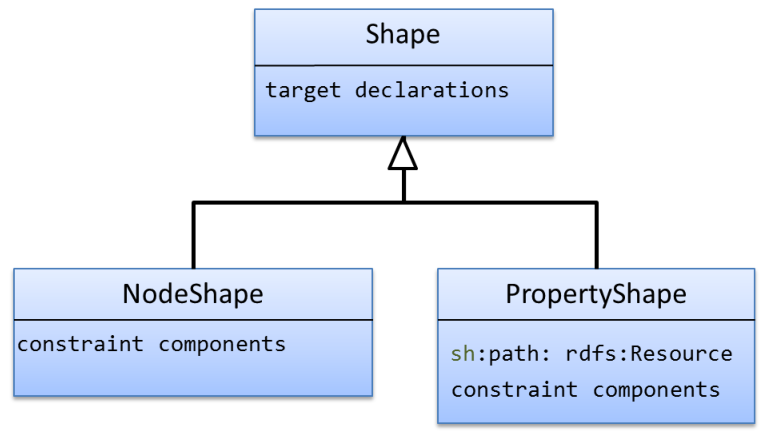
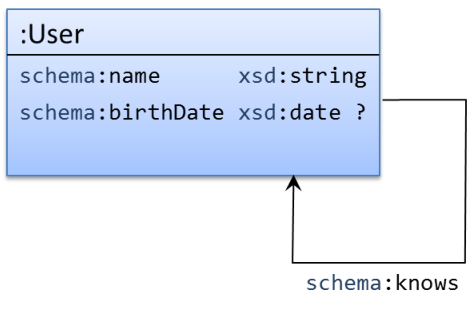
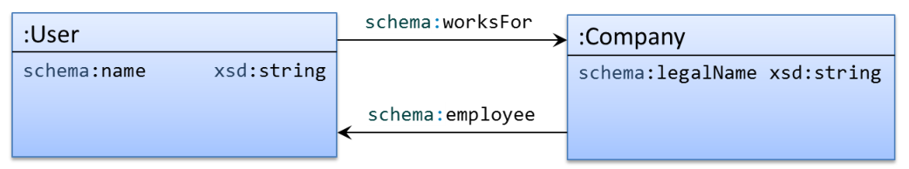
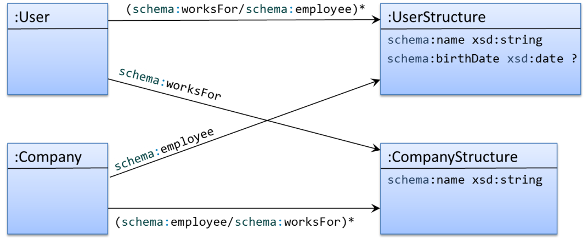
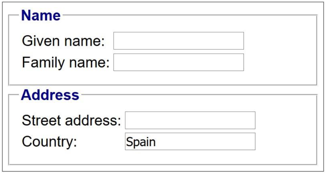

Chapter 5 SHACL
Shapes Constraint Language (SHACL) has been developed by the W3C RDF Data Shapes Working Group,
which was chartered in 2014 with the goal to
“produce a language for defining structural constraints on RDF graphs [6].”
The first public working draft was published in October 2015 and it was proposed as a W3C Recommendation in June 2017.1
SHACL was influenced by SPIN, and some parts from OSLC resource shapes and ShEx.
At the beginning of the Working Group activity it was considered that SHACL was going to be
an integration of all the validation approaches into a unified language.
However, due to core differences, SHACL and ShEx did not converge.
Chapter 7 contains a comparison of both languages and
describes the main differences.
SHACL is divided in two parts.
The first part, called SHACL Core, describes a core RDF vocabulary to define common shapes and constraints while
the second part describes an extension mechanism in terms of SPARQL and has been called: SHACL-SPARQL.
Two working group notes have been published to extend SHACL with
(a) advanced features such as rules and complex expressions2 and
(b) to enable the definition of constraint components in Javascript (called SHACL-Javascript).3
A W3C SHACL community group4 has been created to continue working on SHACL preparing educational contents and
supporting SHACL adoption.
A working group note was also suggested for a SHACL Compact
Syntax5
but it was decided to postpone it for the W3C community group.
5.1 Simple Example
SHACL groups the information and constraints that apply to data nodes into some constructs called shapes.
SHACL shapes differ from ShEx shapes in the sense that they also contain information about the target nodes or set of nodes to which they can be applied.
The syntax of SHACL is defined in terms of RDF so we will use Turtle in this book although it is possible to employ other RDF serialization formats such as JSON-LD or
RDF/XML.
Example 94 UserShape example in SHACL The following example is similar to the ShEx definition in
Example 26.6
It defines a shape
:UserShape of type
sh:NodeShape.
It has target class declaration pointing to
:User which means that it applies to all nodes that are instances of
:User (see Section 5.7.2).
The next lines declare that nodes conforming to
:UserShape must satisfy the following constraints.
- They must have exactly one property
schema:name with values of type
xsd:string (lines 3–8). - They must have exaclty one property
schema:gender whose value must be either
schema:Male or
schema:Female or any
xsd:string literal (lines 9–17). - They have zero or one
schema:birthDate property whose datatype must be
xsd:date (lines 18–22). - They have zero or more
schema:knows properties whose nodes must be IRIs and have type
:User (lines 23–27).
| :UserShape a sh:NodeShape;
sh:targetClass :User ;
sh:property [ # Blank node 1
sh:path schema:name ;
sh:minCount 1;
sh:maxCount 1;
sh:datatype xsd:string ;
] ;
sh:property [ # Blank node 2
sh:path schema:gender ;
sh:minCount 1;
sh:maxCount 1;
sh:or (
[ sh:in (schema:Male schema:Female) ]
[ sh:datatype xsd:string]
)
] ;
sh:property [ # Blank node 3
sh:path schema:birthDate ;
sh:maxCount 1;
sh:datatype xsd:date ;
] ;
sh:property [ # Blank node 4
sh:path schema:knows ;
sh:nodeKind sh:IRI ;
sh:class :User ;
] . |
SHACL defines shapes as a conjunction of constraints that nodes must satisfy.
A SHACL processor checks each of the constraints and returns validation errors for every constraint that is not satisfied.
When no error is reported, it is assumed that the RDF graph has been validated.
Example 95 RDF graph conforming to Example 94
The following RDF data graph conforms to the previous example:
| :alice a :User; #\Passes{:UserShape} *)
schema:name "Alice" ;
schema:gender schema:Female ;
schema:knows :bob .
:bob a :User; #\Passes{:UserShape} *)
schema:gender schema:Male ;
schema:name "Robert";
schema:birthDate "1980-03-10"^^xsd:date .
:carol a :User; #\Passes{:UserShape} *)
schema:name "Carol" ;
schema:gender schema:Female ;
foaf:name "Carol" . |
When an RDF graph conforms to a shapes graph, SHACL processors return a validation report with no errors.
The validation report contains the declaration:
| [ a sh:ValidationReport ;
sh:conforms true
]. |
Example 96 Example of non conforming RDF graph
The following RDF graph does not conform to the shapes graph declared in
Example 94.
| :dave a :User ; #\Fails{:UserShape} *)
schema:name "Dave";
schema:gender :Unknown ;
schema:birthDate 1980 ;
schema:knows :grace .
:emily a :User ; #\Fails{:UserShape} *)
schema:name "Emily", "Emilee";
schema:gender schema:Female .
:frank a :User ; #\Fails{:UserShape} *)
foaf:name "Frank" ;
schema:gender schema:Male .
_:x a :User; #\Fails{:UserShape} *)
schema:name "Unknown" ;
schema:gender schema:Male ;
schema:knows _:x . |
A SHACL processor reports the following errors.
-
:dave has value different from
schema:Male,
schema:Female or string for property
schema:gender (the allowed values). -
:dave has value
1980 for property
schema:birthDate which is of datatype integer when it should be of datatype
xsd:date. -
:dave has value
:grace for property
schema:knows which is not an instance of
:User. -
:emily has 2 values for property
schema:name when the maximum count is 1. -
:frank does not have value for property
schema:name. -
_:x fails because the value of
schema:knows is a blank node and must be an IRI.
When an RDF graph does not conform to a shapes graph, SHACL processors return a validation report that contains several errors.
Section 5.5 describes the validation report structure.
5.2 SHACL Implementations
At the time of this writing, there are several implementations of SHACL.
TopQuadrant has an open source implementation in Java
(using the Apache Jena Library) called TopBraid SHACL API7.
It implements SHACL Core, SHACL-SPARQL, and SHACL rules (see 5.19) and
also offers a command line tool.
TopQuadrant is the company behind TopBraid Composer, which is a commercial interactive development environment for semantic web and linked data applications.
TopBraid Composer (including the free edition) includes a version of the API for RDF validation.
- SHACL Playground,8 an online SHACL demo implemented in Javascript by TopQuadrant.
- SHACLex9 implements SHACL Core (it also implements ShEx).
It has been written in Scala based on a simple and generic RDF Library
(currently it works on top of Apache Jena library but there are plans to use other libraries).
SHACLex can be used to deploy an online validator service and an online demo is deployed in Heroku.10
- Corese STTL SHACL validator. Implemented by Olivier Corby.
It is an implementation of SHACL Core using STTL (SPARQL Template Transformation language), which is a generic transformation language for
RDF.11
STTL is itself implemented in Java.
An online demo of the validator is also available.12
- Netage SHACL Engine13 implemented in Java (using the Jena Library) by Nicky van Oorschot.
It has support for SHACL-SPARQL.
- SHACL-Check a prototype implemented by Tim Berners-Lee to check the
specification.14
- RDFUnit.15
A test driven data-debugging framework that runs test cases against RDF data and records any violations in structured form.
Besides its SPARQL-based constraint definition language, RDFUnit supports rule translation from multiple formats i.e. OWL under closed world semantics, OSLC and DSP.
At the time of this writing, RDFUnit supports a very big part of SHACL-Core and SHACL-SPARQL16.
One of the future plans for RDFUnit is to support ShEx through the SHACLex implementation.
- Alternative SHACL implementation, by Peter F. Patel-Schneider in
Python.17
- ELI Validator, by the ELI (European Legislation Identifier) Initiative18 which is
based on the TopBraid SHACL API.
- SHACL for rdf4j19 (formerly Sesame) developed as a Google Summer of Code
2017 project.
5.3 Basic Definitions: Shapes Graphs, Node, and Property Shapes
A SHACL processor has two inputs: a data graph that contains the RDF data to validate and a shapes graph that contains the shapes.
Example 94 contains a shapes graph and
Examples 95 and 96 contain two possible RDF data graphs.
It is possible to use a single graph that contains both the data and shapes graph merged.
There are two main types of shapes: node shapes and property shapes.
Node shapes declare constraints directly on a node.
Property shapes declare constraints on the values associated with a node through a path.
Property shapes have a property
sh:path that declares the path that goes from the focus node to the value that they describe.
The most frequent paths are predicate paths which are formed by a single IRI.
A node shape usually contains several property shapes which are declared through the
sh:property predicate.
Example 94 contained four such property shape declarations.
The first one was defined as:
| :UserShape ...
sh:property [ # Blank node 1
sh:path schema:name ;
sh:minCount 1;
sh:maxCount 1;
sh:datatype xsd:string ;
] ;
... |
Which means that nodes that conform to
:UserShape must also conform to the property shape identified by blank node 1.
The path of that property shape (line 3) is the predicate
schema:name which is, in this case, a single IRI.
The property shape contains several components that declare that there can be a minimum and a maximum of one values that can be accessed through that path (lines 4 and 5)
and that they must belong to the
xsd:string datatype (line 6).
Notice that in Example 94 we used blank nodes for property shapes and enumerated them from 1–4 because we will refer to them when we describe the validation report in next section.
Although using blank nodes may be more readable, sometimes, it may be better to declare an IRI for the property shapes so they can be referenced from other shapes graphs when they are imported (see the next section).
Example 97 Declaring IRIs for property shapesExample 94 could be rewritten as:
| :UserShape a sh:NodeShape;
sh:targetClass :User ;
sh:nodeKind sh:IRI ;
sh:property :HasEmail ;
sh:property :HasGender ;
sh:property :MaybeBirthDate ;
sh:property :KnowsUsers .
:HasEmail sh:path schema:name ;
sh:minCount 1;
sh:maxCount 1;
sh:datatype xsd:string .
:HasGender sh:path schema:gender ;
sh:minCount 1;
sh:maxCount 1;
sh:or (
[ sh:in (schema:Male schema:Female) ]
[ sh:datatype xsd:string]
) .
:MaybeBirthDate sh:path schema:birthDate ;
sh:maxCount 1;
sh:datatype xsd:date .
:KnowsUsers sh:path schema:knows ;
sh:class :User . |
5.4 Importing other Shapes Graphs
A shapes graph contains shapes definitions that will be passed to the SHACL validation process.
Shapes graphs can be reusable modules that can be referenced by other shapes graphs with the predicate
owl:imports.
As a pre-validation step, SHACL processors should extend the original shapes graph by following and importing all referenced shapes graphs through
owl:imports declarations.
The resulting graph will be the input shapes graph that will be used for validation.
Example 98 Importing shapes graphs
If we assume that Example 94 is available at
IRI http://example.org/UserShapes, then, the following shapes graph imports its shapes and uses them to declare that nodes that conform to
:TeacherShape must also conform to
:UserShape (line 5) and have the predicate
:teaches with a value of datatype
xsd:string.
| <> owl:imports <http://example.org/UserShapes> .
:TeacherShape a sh:NodeShape;
sh:targetClass :Teacher ;
sh:node :UserShape ;
sh:property [
sh:path :teaches ;
sh:minCount 1;
sh:datatype xsd:string;
]
. |
Given the following data:
| :alice a :Teacher; #\Passes{:TeacherShape} *)
schema:name "Alice" ;
schema:gender schema:Female ;
schema:knows :bob ;
:teaches "Algebra" .
:bob a :User ; #\Passes{:UserShape} *)
schema:gender schema:Male ;
schema:name "Robert" .
:carol a :Teacher ; #\Fails{:TeacherShape} *)
schema:gender 23 ;
:teaches "Logic" . |
A SHACL processor validates that
:alice conforms to
:TeacherShape, and
:bob to
:UserShape but reports that
:carol does not conform to
:TeacherShape.
5.5 Validation Report
As we said, SHACL processors take as input a data graph and a shapes graph and return a validation report.
The validation report is defined as an RDF graph with the following structure.
If the data graph conforms to the shapes graph, the report contains a
sh:conforms declaration with the value
true:
| :report a sh:ValidationReport ;
sh:conforms true . |
If the data graph does not conform to the shapes graph, the validation report will have a value
false for the property
sh:conforms and a set of validation errors of type
sh:ValidationResult linked by the property
sh:result.
Each validation result contains metadata about the cause of the error such as
sh:focusNode,
sh:value,
sh:resultPath, etc.
Table 5.1 describes the properties of validation results.
| Table 5.1: SHACL validation result properties |
| Property | Description
|
sh:focusNode | The focus node that was being validated when the error happened
|
sh:resultPath | The path from the focus node. This property is optional usually corresponds to the
sh:path declaration of property shapes
|
sh:value | The value that violated the constraint, when available
|
sh:sourceShape | The shape that the focus node was validated against when the constraint was violated.
|
sh:sourceConstraintComponent | The IRI that identifies the component that caused the violation.
|
sh:detail | May point to further details about the cause of the error.
This property can be used for reporting errors in nested nested shapes.
|
sh:resultMessage | Textual details about the error. This message can be affected by the
sh:message property (see section 5.6.4)
|
sh:resultSeverity | A value which is equal to the
sh:severity value of the shape that caused the violation error. If the shape doesn’t have
sh:severity declaration then the default value will be
sh:Violation. |
Example 99 The validation report generated by a SHACL processor when trying to validate the shapes graph in Example 94 with
the data graph from Example 96 could be:
| :report a sh:ValidationReport ;
sh:conforms false ;
sh:result
[ a sh:ValidationResult ;
sh:resultSeverity sh:Violation ;
sh:sourceConstraintComponent sh:InConstraintComponent ;
sh:sourceShape ... ; # blank node 2
sh:focusNode :dave ;
sh:value :Unknown ;
sh:resultPath schema:gender ;
sh:resultMessage "Value has none of the shapes from the or list"],
[ a sh:ValidationResult ;
sh:resultSeverity sh:Violation ;
sh:sourceConstraintComponent sh:DatatypeConstraintComponent ;
sh:sourceShape ... ; # blank node 3
sh:focusNode :dave ;
sh:value 1980 ;
sh:resultPath schema:birthDate ;
sh:resultMessage "Value does not have datatype xsd:date" ],
[ a sh:ValidationResult ;
sh:resultSeverity sh:Violation ;
sh:sourceConstraintComponent sh:ClassConstraintComponent ;
sh:sourceShape ... ; # blank node 4
sh:focusNode :dave ;
sh:value :grace ;
sh:resultPath schema:knows ;
sh:resultMessage "Value is not an instance of User" ],
[ a sh:ValidationResult ;
sh:resultSeverity sh:Violation ;
sh:sourceConstraintComponent sh:MaxCountConstraintComponent ;
sh:sourceShape ... ; # blank node 1
sh:focusNode :emily ;
sh:resultPath schema:name ;
sh:resultMessage "More than 1 values" ],
[ a sh:ValidationResult ;
sh:resultSeverity sh:Violation ;
sh:sourceConstraintComponent sh:MinCountConstraintComponent ;
sh:sourceShape ...; # blank node 1
sh:focusNode :frank ;
sh:resultPath schema:name ;
sh:resultMessage "Less than 1 values" ],
[ a sh:ValidationResult ;
sh:resultSeverity sh:Violation ;
sh:sourceConstraintComponent sh:NodeKindConstraintComponent ;
sh:sourceShape :UserShape ;
sh:focusNode _:x ;
sh:value _:x ;
sh:resultMessage "Value does not have node kind sh:IRI"]
. |
Although in the rest of this chapter we will describe the different errors in natural language for simplicity,
the validation results returned by SHACL processors will have the structure above.
5.6 Shapes
There are two types of shapes in SHACL: node shapes and property shapes.
Node shapes specify constraints about a node while
property shapes specify constraints about the values that can be reached from a node by a path.

| Figure 5.1: Shapes in SHACL. |
5.6.1 Node shapes
Node shapes directly specify constraints about a focus node.
Example 100 Node shape exampleThe following shapes graph declares a node shape
:UserShape
which applies to all nodes that are instances of
:User
and the constraint that nodes conforming to
:UserShape must be IRIs.
| :UserShape a sh:NodeShape;
sh:targetClass :User ;
sh:nodeKind sh:IRI . |
Given the following RDF graph:
| :alice a :User . #\Passes{:UserShape} *)
<http://other.uri.com/bob> a :User . #\Passes{:UserShape} *)
_:1 a :User . #\Fails{:UserShape} *) |
A SHACL processor checks that
:alice and
<http://other.uri.com/bob> conform to shape
:User and returns the error:
5.6.2 Property Shapes
Property shapes specify constraints about the values that can be reached from a focus node by some path.
sh:property associates a shape with a property shape.
The nodes that are affected by a property shape are specified using
sh:path property
that can take as value IRIs or SHACL paths.
SHACL paths are semantically equivalent to a subset of the SPARQL 1.1 property paths but they use an RDF encoding based on the following rules.
- Direct predicates use a single IRI.
- Inverse paths are declared by a blank node with the property
sh:inversePath.
- Sequence paths are encoded by RDF lists whose values are SHACL paths themselves.
- Alternative paths are declared by a blank node with the property
sh:alternativePath whose value is an RDF list with the different alternatives.
- The path modifiers
?,
*, and
+ are encoded by a blank node with the corresponding
properties
sh:zeroOrOnePath,
sh:zeroOrMorePath or
oneOrMorePath.
Table 5.2 presents some examples of SHACL paths and their corresponding SPARQL paths.
| Table 5.2: SHACL and SPARQL paths |
| SHACL path | SPARQL path
|
schema:name |
schema:name
|
[sh:inversePath schema:knows] |
^schema:knows
|
(schema:knows schema:name) |
schema:knows/schema:name
|
[sh:alternativePath (schema:knows schema:follows)] |
schema:knows|
schema:follows
|
[sh:zeroOrOnePath schema:knows] |
schema:knows?
|
[sh:oneOrMorePath schema:knows] |
schema:knows+
|
([sh:zeroOrMorePath schema:knows] schema:name) |
schema:knows*/schema:name
|
Example 101 SHACL paths exampleThe following shape declares that nodes that are instances of
:User
must satisfy that they must have a value for property
schema:knows or
schema:follows,
which must be an IRI and
that any node linked to users by the transitive closure of the
schema:knows property
must have a
schema:email whose value must also be an IRI.
| :UserShape a sh:NodeShape;
sh:targetClass :User ;
sh:property [
sh:path [sh:alternativePath (schema:knows schema:follows)] ;
sh:nodeKind sh:IRI ;
sh:minCount 1
] ;
sh:property [
sh:path ([sh:oneOrMorePath schema:knows] schema:email) ;
sh:nodeKind sh:IRI
]. |
Given the following RDF data:
| :alice a :User ; #\Passes{:UserShape} *)
schema:follows <mailto:alice@mail.org>;
schema:knows :bob, :carol .
:bob schema:email <mailto:bob@mail.org>;
schema:knows :carol .
:carol schema:email <mailto:carol@mail.org> .
:dave a :User ; #\Fails{:UserShape} *)
schema:knows <mailto:dave@mail.org> ;
schema:knows :carol, :emily .
:emily schema:email "Unknown" . |
A SHACL processor verifies that
:alice conforms to shape
:UserShape because it has
schema:email with an IRI value and
all the nodes that can be reached by the property
schema:knows one or more times followed by the property
schema:email
(which is equivalent to
schema:knows+/schema:email using SPARQL notation) are also IRIs.
The SHACL processor would return error for
:dave because one of the values of
schema:knows has an
schema:email that is not an IRI (
:emily).
5.6.3 Constraint Components
SHACL defines the concept of constraint components which are associated with shapes to declare constraints.
Each node or property shape can be associated with several constraint components.
Constraint components are identified by an IRI and have two types of parameters: mandatory and optional.
The association between a shape and a constraint component is made by declaring values for the parameters.
The parameters are also identified by IRIs and have values.
Most of the constraint components in SHACL Core have a single parameter and follow the convention that
if the parameter is named
sh:p, the corresponding constraint component is named
sh:pConstraintComponent.
Example 102 Shape with two constraintsThe following code:
| :UserShape a sh:NodeShape ;
sh:nodeKind sh:IRI ;
sh:class schema:Person . |
declares a node shape
:UserShape with two constraints which are associated with the following constraint components:
sh:NodeKindConstraintComponent with the value
sh:IRI for the parameter
sh:nodeKind.
The constraint means that nodes that conform to
:UserShape must be IRIs; and
-
sh:ClassConstraintComponent with the value
schema:Person for the parameter
sh:class.
The constraint means that nodes conforming to
:UserShape must be instances of
schema:Person.
Given the following data:
| :alice a schema:Person . #\Passes{:UserShape} *)
:bob a schema:Product . #\Fails{:UserShape} *)
_:x a schema:Person . #\Fails{:UserShape} *) |
When a constraint component declares a single parameter,
the parameter may be used several times in the same shape.
Each value of the parameter declares a different constraint.
The interpretations of such declarations is conjunctive, i.e., all constraints apply.
Example 103 Shape with two constraints with the same parameterThe following code:
| :UserShape a sh:NodeShape;
sh:class foaf:Person ;
sh:class schema:Person . |
Declares two constraints with the parameter
sh:class that means that nodes conforming to
:UserShape must be instances of both
foaf:Person and
schema:Person.
Constraint components are associated with validators which define the behavior of the constraint.
SHACL Core contains a list of built-in constraint components that are classified in
Table 5.3.
In the table, we included the parameter names because they are shorter than the component IRIs.
Those components will be described in more detail in their corresponding sections later in this chapter.
| Table 5.3: SHACL core constraint components |
| Operation | Parameters | Section
|
| Cardinality constraints |
sh:minCount,
sh:maxCount | 5.8
|
| Value types |
sh:class,
sh:datatype,
sh:nodeKind
sh:in,
sh:hasValue | 5.9
|
| Value range constraints |
sh:minInclusive,
sh:maxInclusive
sh:minExclusive,
sh:maxExclusive | 5.10.1
|
| String based constraints |
sh:minLength,
sh:maxLength
sh:length
sh:pattern | 5.10.2
|
| Language based |
sh:uniqueLang,
sh:languageIn | 5.10.3
|
| Logical constraints |
sh:and,
sh:or,
sh:xone,
sh:not | 5.11
|
| Shape-based constraints |
sh:node,
sh:property
sh:qualifiedValueShape,
sh:qualifiedValueShapesDisjoint
sh:qualifiedMinCount
sh:qualifiedMaxCount | 5.12
|
| Closed shapes |
sh:closed,
sh:ignoredProperties | 5.13
|
| Property pair constraints |
sh:equals,
sh:disjoint
sh:lesThan,
sh:lessThanOrEquals | 5.14
|
| Non-validating constraints |
sh:name,
sh:description,
sh:order,
sh:group | 5.15
|
As we will show in Section 5.16, SHACL-SPARQL can be used to declare other constraint components.
5.6.4 Human Friendly Messages
The property sh:message can be used to associate a human-friendly message
with a shape.
If there is a violation that affects that shape, a SHACL processor can include
the value of sh:message as the value of
sh:resultMessage
in the validation report.
Example 104
sh:message example| :UserShape a sh:NodeShape ;
sh:targetClass :User ;
sh:property [ # Blank node 1
sh:path schema:name ;
sh:minCount 1 ;
sh:message "Where is the name?"
] . |
Given the following RDF graph:
| :alice a :User ; #\Passes{:UserShape} *)
schema:name "Alice" .
:bob a :User ; #\Fails{:UserShape} *)
foaf:name "Bob" . |
A SHACL processor would return the following validation report:
| :report a :ValidationReport ;
sh:conforms false ;
sh:result [ a sh:ValidationResult ;
sh:resultSeverity sh:Violation ;
sh:sourceConstraintComponent sh:MinCountConstraintComponent ;
sh:sourceShape ... ; # Blank node 1
sh:focusNode :bob ;
sh:resultPath schema:name ;
sh:resultMessage "Where is the name?" ;
] . |
5.6.5 Declaring Shape Severities
The property sh:severity can be used to declare a severity value for a shape.
If there is a violation that affects that shape, a SHACL processor can include the value of sh:severity as the value of
sh:resultSeverity in the validation report.
SHACL describes three kinds of severity levels:
sh:Info, sh:Warning, and sh:Violation.
If the shape does not declare a severity value, the default one is
sh:Violation.
Example 105
sh:severity exampleGiven the following shapes graph:
| :UserShape a sh:NodeShape ;
sh:targetClass :User ;
sh:property [ # Blank node 1
sh:path schema:name ;
sh:datatype xsd:string ;
sh:severity sh:Warning
] . |
and the RDF graph:
| :alice a :User ; #\Passes{:UserShape} *)
schema:name "Alice" .
:bob a :User ; #\Fails{:UserShape} *)
schema:name 23 . |
A SHACL processor returns the following validation report:
| :report a :ValidationReport ;
sh:conforms false ;
sh:result [ a sh:ValidationResult ;
sh:resultSeverity sh:Warning ;
sh:sourceConstraintComponent sh:DatatypeConstraintComponent ;
sh:sourceShape ... ; # Blank node 1
sh:focusNode :bob ;
sh:resultPath schema:name ;
sh:resultMessage "Datatype should be xsd:string" ;
sh:value 23
] . |
5.6.6 Deactivating Shapes
If a shape has the property
sh:deactivated with the value
true then it is deactivated and all RDF terms will conform to it.
A typical use case for deactivated shapes is when one
imports shapes from another graph by a third party and wants to deactivate some of the shapes in the local shapes graph that do not apply in the current context.
Notice that if the author of a shapes library anticipates that a shape may need to be disabled or modified by others,
it may be better to use IRIs instead of blank nodes, so they can be referenced later.
Example 106 Deactivating shapes
Let’s assume that there is a shapes library available at IRI
http://example.org/UserShapes with the following shapes graph:
| :UserShape a sh:NodeShape;
sh:targetClass :User ;
sh:property :HasName ;
sh:property :HasEmail .
:HasName sh:path schema:name ;
sh:minCount 1;
sh:maxCount 1;
sh:datatype xsd:string .
:HasEmail sh:path schema:email ;
sh:minCount 1;
sh:nodeKind sh:IRI . |
And we define a shapes graph importing the previous shapes and adding a declaration for
:TeacherShape that deactivates the property
:HasEmail:
| <> owl:imports <http://example.org/UserShapes> .
:TeacherShape a sh:NodeShape;
sh:targetClass :Teacher ;
sh:node :UserShape ;
sh:property [
sh:path :teaches ;
sh:minCount 1;
sh:datatype xsd:string;
] ;
:HasEmail sh:deactivated true . |
The merged shapes graph deactivates the property shape
:HasEmail so nodes that conform to
:TeacherShape need to conform to
:UserShape but do not need to have
schema:email property.
Given the following RDF data:
| :alice a :Teacher ; #\Passes{:TeacherShape} *)
schema:name "Alice" ;
schema:email <mailto:alice@example.org>;
:teaches "Logic" .
:bod a :Teacher ; #\Passes{:TeacherShape} *)
schema:name "Robert" ;
schema:email "This email is not an IRI";
:teaches "Algebra" .
:carol a :Teacher ; #\Fails{:TeacherShape} *)
schema:name 23 ;
:teaches "Logic" . |
A SHACL processor checks that
:alice and
:bob conform to
:TeacherShape even if
:bob does not conform to the
:HasEmail shape.
It returns the following error:
-
:carol does not conform to
:TeacherShape because it does not conform to
:UserShape as the value of property
schema:name does not have datatype
xsd:string.
5.7 Target Declarations
SHACL shapes may define several target declarations.
Target declarations specify the set of nodes that will be validated against a shape.
Table 5.4 contains the different target declarations defined in SHACL core.
SHACL targets provide the same functionality as the ShEx Shape maps (see 4.9).
We discuss the core differences in section 7.4.
| Table 5.4: SHACL target declarations |
| Value | Description
|
sh:targetNode | Directly point to a node
|
sh:targetClass | All nodes that are instances of some class
|
sh:targetSubjectsOf | All nodes that are subjects of some predicate
|
sh:targetObjectsOf | All nodes that are objects of some predicate
|
5.7.1 Target Node
The predicate
sh:targetNode declares a node that must conform to some shape.
Example 107
sh:targetNode exampleIn the following example,
:alice,
:bob, and
:carol are declared as the target nodes of
:UserShape so a SHACL processor will validate those nodes.
| :UserShape a sh:NodeShape ;
sh:targetNode :alice, :bob, :carol ;
sh:property [
sh:path schema:name ;
sh:minCount 1;
sh:maxCount 1;
sh:datatype xsd:string ;
] . |
Given the RDF graph:
| :alice schema:name "Alice Cooper" . #\Passes{:UserShape} *)
:bob foaf:name "Bob" . #\Fails{:UserShape} *)
:carol schema:name 23 . #\Fails{:UserShape} *)
:dave schema:name 45 . # Ignored |
A SHACL processor checks that
:alice conforms to
:UserShape and returns the errors:
-
:bob does not have have value for property
schema:name
-
:carol has a value which is not a
xsd:string for property
schema:name.
Notice that it ignores
:dave as it was not affected by the
sh:targetNode declaration.
sh:targetNode provides a similar functionality to the ShEx Fixed shape map (see 4.9.1).
However, the difference is that SHACL target nodes silently ignore missing target nodes from the data graph, while in ShEx, we get back a failure.
Depending on the data and constraint modeling approach, silent ignore may lead to false-positives and thus, target nodes should be used with caution.
5.7.2 Target Class
Target class declarations specify that all instances of some class must be validated with some shape.
SHACL employs a specific notion of instance, which is called SHACL instance, which can be defined using SPARQL property paths as:
A node
X is a SHACL instance of a class
C if
X rdf:type/rdfs:subClassOf* C.
It means that nodes with an explicit
rdf:type arc declaration are considered
but also values that have an
rdf:type declaration pointing to some class that is transitively linked to another class by the
rdfs:subClassOf predicate.
Note that the definition uses only the predicate
rdfs:subClassOf but does not take into account other predicates from RDFS like
rdfs:domain,
rdfs:target, etc.
The definition is does not require RDFS inference.
Example 108
sh:targetClass example| :UserShape a sh:NodeShape ;
sh:targetClass :User ;
sh:property [
sh:path schema:name ;
sh:minCount 1;
sh:maxCount 1;
sh:datatype xsd:string ;
] . |
Given the following RDF graph:
| :alice a :User; #\Passes{:UserShape} *)
schema:name "Alice Cooper" .
:bob a :User; #\Fails{:UserShape} *)
foaf:name "Bob" .
:carol a :User; #\Fails{:UserShape} *)
schema:name 23 .
:dave a :Student ; #\Fails{:UserShape} *)
schema:name 45 .
:emily a :Student ; #\Passes{:UserShape} *)
schema:name "Emily" .
:Student rdfs:subClassOf :User . |
A SHACL validator checks that both
:alice and
:emily conform to
:UserShape and returns the following errors:
-
:bob does not have property
schema:name.
-
:carol has a value for
schema:name that is not an
xsd:string.
-
:dave has a value for
schema:name that is not an
xsd:string.
5.7.3 Implicit Class Target
A shape with type
sh:NodeShape and
rdfs:Class is a target class of itself.
This means that the
sh:targetClass declaration is implicit.
Example 109 Example using implicit targetClass| :User a sh:NodeShape, rdfs:Class ;
sh:property [
sh:path schema:name ;
sh:minCount 1;
sh:maxCount 1;
sh:datatype xsd:string ;
] . |
has the same validation behavior as:
| :User a sh:NodeShape ;
sh:targetClass :User ;
sh:property [
sh:path schema:name ;
sh:minCount 1;
sh:maxCount 1;
sh:datatype xsd:string ;
] . |
So given the following RDF graph:
| :alice a :User; #\Passes{:User} *)
schema:name "Alice Cooper" .
:bob a :User; #\Fails{:User} *)
foaf:name "Robert" . |
The system would return the following error.
-
:bob does not have property
schema:name.
Implicit target class declarations conflate the concept of shape and class as a single entity.
This can be a dangerous practice in the open semantic web as they are different concepts (see 3.2).
It can also be a very convenient feature to associate shape constraints with classes,
and the Data Shapes Working Group decided to support it.
In this book, we opt to separate shapes and classes, using the following pattern:
| :UserShape a sh:NodeShape ;
sh:targetClass :User ;
... |
5.7.4 Target Subjects Of
The property
sh:targetSubjectsOf selects as focus nodes the subjects of some property.
Example 110
sh:targetSubjectsOf example
| :UserShape a sh:NodeShape;
sh:targetSubjectsOf :teaches ;
sh:property [
sh:path schema:name ;
sh:minCount 1;
sh:maxCount 1;
sh:datatype xsd:string ;
] . |
Given the following RDF graph:
| :alice :teaches :Algebra ; #\Passes{:UserShape} *)
schema:name "Alice" .
:bob :teaches :Logic ; #\Fails{:UserShape} *)
foaf:name "Robert" .
:carol foaf:name 23 . # Ignored |
The system checks that
:alice has shape
:UserShape and signals the error:
-
:bob does not have property
schema:name.
In this case, the system ignores
:carol.
5.7.5 Target Objects Of
The property
sh:targetObjectsOf selects as focus nodes the objects of some property.
Example 111
sh:targetObjectsOf example
| :UserShape a sh:NodeShape;
sh:targetObjectsOf :isTaughtBy ;
sh:property [
sh:path schema:name ;
sh:minCount 1;
sh:maxCount 1;
sh:datatype xsd:string ;
] . |
Given the following RDF graph:
| :alice schema:name "Alice" . #\Passes{:UserShape} *)
:bob foaf:name "Robert" . #\Fails{:UserShape} *)
:carol foaf:name 23 . # Ignored
:algebra :isTaughtBy :alice, :bob . |
The system checks that
:alice has shape
:UserShape and signals the error:
-
:bob does not have property
schema:name.
The system ignores
:carol as it is not the object of the
:isTaughtBy property.
5.8 Cardinality
Cardinality constraint components specify restrictions on the minimum and maximum number of distinct value nodes.
Table 5.5 defines the cardinality constraint component parameters in SHACL.
The default cardinality in SHACL for property shapes is
{0,unbounded}.
| Table 5.5: SHACL cardinality constraint components |
| Operation | Description
|
sh:minCount | Restricts minimum number of value nodes.
If not defined, there is no restriction (no minimum).
|
sh:maxCount | Restricts maximum number of value nodes.
If not defined, there is no restriction (unbounded).
|
Example 112 CardinalityGiven the following shapes graph:
| :User a sh:NodeShape, rdfs:Class ;
sh:property [
sh:path schema:follows ;
sh:minCount 2 ;
sh:maxCount 3 ;
] . |
and the following RDF graph:
| :alice a :User ; #\Passes{:User} *)
schema:follows :bob, :carol .
:bob a :User ; #\Fails{:User} *)
schema:follows :alice .
:carol a :User ; #\Fails{:User} *)
schema:follows :alice, :bob,
:carol, :dave . |
A SHACL validator returns the errors:
-
:bob has less than two values for the property
schema:follows; and
-
:carol has more than three values for the property
schema:follows.
5.9 Constraints on Values
These constraint components specify the set of values that a node can have.
For example, nodes with some datatype, or are IRIs, or literals, etc.
Table 5.6 describes the different possibilities which we will detail in the following sections.
| Table 5.6: Constraints on values |
| Operation | Description
|
sh:datatype | Specifies the values must be literals with some datatype
|
sh:class | Specifies that values must be SHACL instances of some class
|
sh:nodeKind | Possible values:
sh:BlankNode,
sh:IRI,
sh:Literal,
sh:BlankNodeOrIRI,
sh:BlankNodeOrLiteral,
sh:IRIOrLiteral
|
sh:in | Enumerates the value nodes that a property is allowed to have
|
sh:hasValue | A node must have a given value
|
5.9.1 Datatypes
sh:datatype specifies the datatype that a focus node must have.
Remember that all literals in the RDF data model have an associated datatype
(see Section 2.2).
Plain string literals have
xsd:string datatype by default.
SHACL contains a list of built-in datatypes that are based on XML Schema datatypes (which are the same as in SPARQL 1.1).
For those datatypes SHACL processors also check that the lexical form conforms to the datatype rules.
This means that something like
"Unknown"^^xsd:date is not a well-typed
literal because
"Unknown"xsd:date rules.
Example 113 Simple datatypes exampleGiven the following shapes
graph20:
| :UserShape a sh:NodeShape ;
sh:targetClass :User ;
sh:property [
sh:path schema:name ;
sh:datatype xsd:string
] ;
sh:property [
sh:path schema:birthDate ;
sh:datatype xsd:date ;
] . |
and the following RDF graph:
| :alice a :User ; # \Passes{:User} *)
schema:name "Alice";
schema:birthDate "1981-07-10"^^xsd:date .
:bob a :User ; # \Fails{:User} *)
schema:name "Robert" ;
schema:birthDate 1981 .
:carol a :User ; # \Fails{:User} *)
schema:name :Carol ;
schema:birthDate "2003-06-10"^^xsd:date .
:dave a :User ; # \Fails{:User} *)
schema:name "Dave" ;
schema:birthDate "Unknown"^^xsd:date . |
A SHACL processor validates that
:alice has shape
:User and returns the following errors:
-
:bob has a value for path
schema:birthDate that is not a
xsd:date (it is an integer); -
:carol has a value for path
schema:name that is not a
xsd:string (it is an IRI); and -
:dave has a value for path
schema:birthDate that is not a
xsd:date (its lexical form does not match
xsd:date).
Example 114 Custom datatypes example
The RDF data model enables the use of other datatypes apart from the popular XML Schema datatypes.
In the following example, a picture contains the properties
schema:width and
schema:height using a hypothetical custom datatype (
cdt:distance).
| :PictureShape a sh:NodeShape ;
sh:targetClass :Picture ;
sh:property [
sh:path schema:width ;
sh:datatype cdt:distance
] ;
sh:property [
sh:path schema:height ;
sh:datatype cdt:distance
] . |
| :gioconda a :Picture ; # \Passes{:PictureShape} *)
schema:width "21 in"^^cdt:distance ;
schema:height "30 in"^^cdt:distance .
:other a :Picture ; # \Fails{:PictureShape} *)
schema:width "21 in"^^xsd:string ;
schema:height 30 . |
Example 115 Language-tagged literals
A common use case is to declare that some literals must be language-tagged strings.
| :CountryShape a sh:NodeShape ;
sh:targetClass :Country ;
sh:property [
sh:path schema:name ;
sh:datatype rdf:langString
] . |
| :spain a :Country ; #\Passes{:CountryShape}*)
schema:name "España"@es .
:france a :Country ; #\Fails{:CountryShape}*)
schema:name "France" . |
5.9.2 Class of Values
sh:class specifies that each value is an instance of a given class.
As in Section 5.7.2, the notion of instance that SHACL uses is a variation of RDF Schema where a node X is an instance of C if
X rdf:type/rdfs:subClassOf* C.
Example 116 Class of valuesThe following shape
:User declares that the values of property
schema:worksFor must be SHACL instances of the
:Organization class.
| :UserShape a sh:NodeShape ;
sh:targetClass :User ;
sh:property [
sh:path schema:worksFor ;
sh:class :Organization
] . |
Given the following RDF graph:
| :alice a :User ; #\Passes{:User} *)
schema:worksFor :aCompany .
:bob a :User ; #\Passes{:User} *)
schema:worksFor :aUniversity .
:carol a :User ; #\Fails{:User} *)
schema:worksFor :Unknown .
:aCompany a :Organization .
:aUniversity a :University .
:University rdfs:subClassOf :Organization . |
A SHACL processor verifies that
:alice and
:bob conform to shape
:User and returns the following error:
-
:carol has the value
:Unknown for property
schema:worksFor which is not a SHACL instance of
:Organization.
5.9.3 Node Kinds
sh:nodeKind specifies the kind of values according to the RDF Data model.
Table 5.7 contains the possible values for that property.
| Nodekind | Description
|
sh:IRI | Nodes must be IRIs
|
sh:BlankNode | Nodes must be Blank nodes
|
sh:Literal | Nodes must be Literals
|
sh:BlankNodeOrLiteral | Nodes must be Blank nodes or literals
|
sh:BlankNodeOrIRI | Nodes must be Blank nodes or IRIs
|
sh:IRIOrLiteral | Nodes must be IRIs or literals
|
Example 117 Nodekind example| :UserShape a sh:NodeShape ;
sh:targetClass :User ;
sh:property [
sh:path schema:name ;
sh:nodeKind sh:Literal ;
];
sh:property [
sh:path schema:follows ;
sh:nodeKind sh:BlankNodeOrIRI
];
sh:nodeKind sh:IRI
. |
Given the following RDF graph:
| :alice a :User; #\Passes{:UserShape} *)
schema:name "Alice" ;
schema:follows [ schema:name "Dave" ] .
:bob a :User; #\Fails{:UserShape} *)
schema:name _:1 ;
schema:follows :alice .
:carol a :User; #\Fails{:UserShape} *)
schema:name "Carol" ;
schema:follows "Dave" .
:dave a :User . #\Passes{:UserShape} *)
_:1 a :User . #\Fails{:UserShape} *) |
A SHACL processor verifies that
:alice and
:dave conform to shape
:UserShape and returns the following errors:
-
:bob has a value that is not a literal for property
schema:name. -
:carol has a value that is not a blank node or IRI for property
schema:follows. -
_:1 is not an IRI .
Note that
:dave pases as
:UserShape because there are no cardinality restrictions on
schema:name and
schema:follows.
5.9.4 Sets of Values
sh:in specifies that each value must be a member of the provided list.
Example 118
sh:in example| :UserShape a sh:NodeShape ;
sh:targetClass :User ;
sh:property [
sh:path schema:gender ;
sh:in ( schema:Male schema:Female )
] . |
Given the following RDF graph:
| :alice a :User; #\Passes{:UserShape} *)
schema:affiliation :OurCompany ;
schema:gender schema:Female .
:bob a :User; #\Fails{:UserShape} *)
schema:gender schema:male . |
A SHACL processor verifies that
:alice conforms to
:UserShape and returns the following errors:
-
:bob has a value for
schema:gender that is not in the list
( schema:Male schema:Female) because
schema:Male is not equal to
schema:male.
5.9.5 Specific Value
sh:hasValue declares the value that a node must have .
Notice that even if there is no
sh:minCount declared, this constraint checks that the property has that value (and possibly others).
Example 119
sh:hasValue| :UserShape a sh:NodeShape ;
sh:targetClass :User ;
sh:property [
sh:path schema:affiliation ;
sh:hasValue :OurCompany
] . |
Given the following RDF graph:
| :alice a :User; #\Passes{:UserShape} *)
schema:affiliation :OurCompany .
:bob a :User; #\Fails{:UserShape} *)
schema:affiliation :OurUniversity .
:carol a :User . #\Fails{:UserShape} *)
:dave a :User; #\Passes{:UserShape} *)
schema:affiliation :OurCompany ;
schema:affiliation :OurUniversity . |
A SHACL processor verifies that
:alice conforms to
:UserShape and returns the following errors:
-
:bob does not have value
:OurCompany for property
schema:affiliation; and
-
:carol does not have value for property
schema:affiliation.
5.10 Datatype Facets
SHACL contains a list of built-in constraint components that resemble XML Schema facets and have the same semantics.
5.10.1 Value Ranges
The parameters
sh:minInclusive,
sh:minExclusive,
sh:maxInclusive,
sh:maxExclusive declare the minimum or maximum value of a literal with the variants to include or exclude the given value.
Example 120 Example with value ranges| :Rating a sh:NodeShape ;
sh:targetSubjectsOf schema:ratingValue ;
sh:property [
sh:path schema:ratingValue ;
sh:minInclusive 1 ;
sh:maxInclusive 5 ;
sh:datatype xsd:integer
] . |
Given the following RDF graph:
| :low schema:ratingValue 1 . #\Passes{:Rating} *)
:average schema:ratingValue 3 . #\Passes{:Rating} *)
:veryGood schema:ratingValue 5 . #\Passes{:Rating} *)
:zero schema:ratingValue 0 . #\Fails{:Rating} *)
:incredible schema:ratingValue 100 . #\Fails{:Rating} *) |
A SHACL processor verifies that
:low,
:average, and
:veryGood conform to shape
:Rating and returns the errors:
-
:zero has a value below the minimum
1; and -
:incredible has a value bigger than the maximum
5.
5.10.2 String-based Constraints
The parameters
sh:minLength,
sh:maxLength,
and
sh:pattern (with
sh:flags) specify string facets on value nodes.
These constraints check the string representation of the value.21
String facets are always violated when the value node is a blank node.
sh:minLength and
sh:maxLength specify constraints on the size of the string representation of a value node.
When
sh:minLength is 0, it means that there is no restriction on the length of the string.
Example 121
sh:minLength,
sh:maxLength example| :User a sh:NodeShape, rdfs:Class ;
sh:property [
sh:path schema:name ;
sh:minLength 4 ;
sh:maxLength 20 ;
] ;
sh:property [
sh:path schema:description ;
sh:minLength 0 ;
] . |
The following RDF graph:
| :alice a :User; #\Passes{:User} *)
schema:name "Alice";
schema:description "...long description..." .
:bob a :User; #\Fails{:User} *)
schema:name "Bob" .
:carol a :User; #\Fails{:User} *)
schema:name :Carol .
:strange a :User; #\Fails{:User} *)
schema:name _:strange . |
verifies that
:alice and
:carol conform to shape
:User and reports the errors:
-
:bob has a
schema:name whose length is less that 4; and -
:strange has a blank node as the value for property
schema:name whose length can’t be calculated.
In the case of
:carol, notice that the example depends on the length of the prefixed name
:Carol which will
be calculated after concatenating the IRI associated with the empty prefix
: to
Carol.
In this case, if
: is associated with
http://example.org/, the processor will evaluate the length of
http://example.org/Carol (which is 24) and fails because it is bigger than 20.
Example 122 Example with pattern
sh:pattern specifies that a value must match a regular expression.
It has the same definition as the SPARQL regex function.22
The parameter
sh:flags is optional and can modify the way the regular expression matches.
The definition of
sh:flags is the same as SPARQL and XPath regular expressions.
One of the most popular flags is
i which indicates that the match is case-insensitive.
We already gave a short introduction to regular expressions in
Section 4.5.3.
Although that section was for ShEx, the concept is the same.
| :ProductShape a sh:NodeShape ;
sh:targetClass :Product ;
sh:property [
sh:path schema:productID ;
sh:pattern "^P\\d{3,4}" ;
sh:flags "i" ;
] . |
Given the following RDF graph:
| :car a :Product ;
schema:productID "P2345" . #\Passes{:Product} *)
:bus a :Product;
schema:productID "p567" . #\Passes{:Product} *)
:truck a :Product;
schema:productID "P12" . #\Fails{:Product} *)
:bike a :Product;
schema:productID "B123" . #\Fails{:Product} *) |
A SHACL processor verifies that
:car and
:bus conform to
:Product and returns the following errors:
-
:truck has a value for
schema:productID that is too short; and -
:bike has a value for
schema:productID that does not start with
P or
p.
5.10.3 Language-based Constraints
sh:languageIn declares the allowed languages of a literal and
sh:uniqueLang specifies that no pair of nodes can have the same language tag.
Example 123 Example with
sh:languageInThe following example declares that the
rdfs:label property of a product must be a tagged literal in Spanish, English, or French.
| :ProductShape a sh:NodeShape;
sh:targetClass :Product ;
sh:property [
sh:path rdfs:label ;
sh:languageIn ("es" "en" "fr")
] . |
| :p234 a :Product ; #\Passes{:ProductShape} *)
rdfs:label "jamón"@es,
"ham"@en .
:p235 a :Product ; #\Passes{:ProductShape} *)
rdfs:label "milk"@en .
:p236 a :Product ; #\Fails{:ProductShape} *)
rdfs:label "Käse"@de .
:p237 a :Product ; #\Fails{:ProductShape} *)
rdfs:label "patatas"@es ,
"kartofeln"@de . |
Example 124 Example with
sh:uniqueLang The following example declares that if the nodes of shape
:CountryShape have property
skos:prefLabel then the values must have different language tags.
| :CountryShape a sh:NodeShape ;
sh:targetClass :Country ;
sh:property [
sh:path skos:prefLabel ;
sh:uniqueLang true
] . |
| :spain a :Country; #\Passes{:CountryShape} *)
skos:prefLabel "Spain"@en,
"España"@es .
:france a :Country; #\Passes{:CountryShape} *)
skos:prefLabel "France",
"France"@en,
"Francia"@es .
:italy a :Country . #\Passes{:CountryShape} *)
:usa a :Country; #\Fails{:CountryShape} *)
skos:prefLabel "USA"@en,
"United States"@en. |
The previous example returns the error:
- Node
:usa has more than one language for English at property
skos:prefLabel.
In the previous example, a node without
skos:prefLabel (e.g.,
:italy) also conforms to
:CountryShape.
Example 125 Example with one language tag in a list of languagesA typical situation is to require exactly one literal per language from a list of allowed languages.
For example, declaring that nodes of shape
:CountryShape have at least one
skos:prefLabel in English or Spanish.
| :CountryShape a sh:NodeShape ;
sh:targetClass :Country ;
sh:property [
sh:path skos:prefLabel ;
sh:minCount 1 ;
sh:uniqueLang true ;
sh:languageIn ("en" "es") ;
] . |
Given the following data:
| :spain a :Country; #\Passes{:CountryShape} *)
skos:prefLabel "Spain"@en,
"España"@es .
:france a :Country; #\Fails{:CountryShape} *)
skos:prefLabel "France" ,
"France"@en,
"Francia"@es .
:italy a :Country . #\Fails{:CountryShape} *)
:usa a :Country; #\Fails{:CountryShape} *)
skos:prefLabel "USA"@en,
"United States"@en. |
In this case,
:italy fails because it has no
skos:prefLabel,
:france fails because if has one value that is not in English or Spanish, and
:usa fails because it has more than one value in English.
5.11 Logical Constraints: and, or, not, xone
The operators
sh:and,
sh:or,
xone, and
sh:not can be used to form complex constraints.
Their semantics is described in Table 5.8.
sh:and,
sh:or, and
sh:not have the traditional meaning of the corresponding Boolean operators while
sh:xone (exactly one) is similar to the exclusive-or when applied to two arguments.
When applied to more than 2 arguments, the former requires exactly one,
while the latter requires an odd number of arguments to be satisfied.
| Table 5.8: SHACL logical operators |
| Operation | Description
|
sh:and |
sh:and (S1 ... SN) specifies that each value node must conform to all the shapes
S1…
SN.
|
sh:or |
sh:or (S1 ... SN) specifies that each value node conforms to at least one of the shapes
S1…
SN.
|
sh:not |
sh:not S specifies that each value node must not conform to
S.
|
sh:xone |
sh:xone (S1 ... SN) specifies that exactly one node conforms to one of the shapes
S1…
SN.
|
5.11.1 AND
A node conforms to a shape containing the
sh:and operator if it conforms to all the shapes linked by it.
The following example declares a
:User shape as the conjunction of two property shapes.
Example 126 SHACL AND example| sh:targetClass :User ;
sh:and (
[ a sh:NodeShape;
sh:property [
sh:path schema:name;
sh:datatype xsd:string ;
sh:minCount 1 ]
]
[ a sh:NodeShape ;
sh:property [
sh:path schema:affiliation;
sh:minCount 1 ]
]
)
. |
The declaration of type
sh:NodeShape and the use of
sh:property is not required when we want to reference a property shape. The following code is equivalent to the previous example.
| sh:targetClass :User ;
sh:and (
[ sh:path schema:name;
sh:datatype xsd:string ;
sh:minCount 1
]
[ sh:path schema:affiliation;
sh:minCount 1
]
)
. |
sh:and is a little redundant because by default, when we associate constraint components to a shape,
the meaning is that all those constraints must conform, so there is an implicit conjunction.
For example, the previous shape and the following one have the same meaning.
| :UserShape a sh:NodeShape ;
sh:targetClass :User ;
sh:property [
sh:path schema:name;
sh:datatype xsd:string ;
sh:minCount 1
] ;
sh:property [
sh:path schema:affiliation;
sh:minCount 1
]
. |
In case of complex expressions, using
sh:and may improve readability.
One example is using
sh:and to extend one shape with other constraints.
Example 127 Extending a shape with other constraints
The following example declares a top-level shape
:Person whose nodes must have
schema:name.
The shape
:User extends
:Person adding a new constraint on the existing property
schema:name and declaring the need of another property
schema:email.
Finally, the shape
:Student extends
:User adding a new property
:course.23
| :Person a sh:NodeShape, rdfs:Class ;
sh:property [
sh:path schema:name ;
sh:datatype xsd:string ;
sh:minCount 1 ;
sh:maxCount 1
] .
:User a sh:NodeShape, rdfs:Class ;
sh:and (
:Person
[ sh:path schema:name ;
sh:maxLength 5
]
[ sh:path schema:email ;
sh:nodeKind sh:IRI ;
sh:minCount 1 ;
sh:maxCount 1
]
) .
:Student a sh:NodeShape, rdfs:Class ;
sh:and (
:User
[ sh:path :course ;
sh:nodeKind sh:IRI ;
sh:minCount 1;
]
) . |
If we have the following RDF data:
| :alice a :Person ; # \Passes{:Person} *)
schema:name "Alice" .
:bob a :User ; # \Fails{:User} *)
schema:name "Robert Smith"; # long name *)
schema:email <bob@example.org> .
:carol a :Person, :User; # \Passes{:Person and :User} *)
schema:name "Carol" ;
schema:email <carol@example.org> .
:dave a :Student; # \Passes{:Person,:User and Student} *)
schema:name "Dave" ;
schema:email <carol@example.org>;
:course :algebra . |
5.11.2 OR
The parameter
sh:or declares a disjunction between several shapes.
Example 128 SHACL disjunction exampleThe following shape declares that nodes must either have property
foaf:name or
schema:name (or both).
| :UserShape a sh:NodeShape ;
sh:targetClass :User ;
sh:or ( [ sh:path foaf:name;
sh:minCount 1;
]
[ sh:path schema:name;
sh:minCount 1;
]
)
. |
Given the following data:
| :alice a :User ;
schema:name "Alice" . #\Passes{:User} *)
:bob a :User ;
foaf:name "Robert" . #\Passes{:User} *)
:carol a :User ;
foaf:name "Carol"; #\Passes{:User} *)
schema:name "Carol" .
:dave a :User ;
rdfs:label "Dave" . #\Fails{:User} *) |
A SHACL processor checks that
:alice,
:bob, and
:carol conform to
:UserShape but returns an error on
:dave.
For this particular example, the use of
sh:or could be replaced by a SHACL property with
sh:alternativePath:
| :UserShape a sh:NodeShape ;
sh:property [
sh:path [sh:alternativePath (schema:name foaf:name)] ;
sh:minCount 1;
] . |
Example 129 Union of datatypesA common use case of
sh:or is to declare the union of several datatypes.
The following example declares that products must have a
rdfs:label which must be either a
xsd:string or a language tagged literal, and
must have a release date that must be either a
xsd:date, or
xsd:gYear or the string
"unknown-past""unknown-future"
| :ProductShape a sh:NodeShape;
sh:targetClass :Product ;
sh:property [
sh:path rdfs:label ;
sh:or (
[sh:datatype xsd:string]
[sh:datatype rdf:langString]
);
sh:minCount 1;
sh:maxCount 1
];
sh:property [
sh:path schema:releaseDate ;
sh:or (
[sh:datatype xsd:date]
[sh:datatype xsd:gYear]
[sh:in ("unknown-past" "unknown-future")]
);
sh:minCount 1;
sh:maxCount 1
];
. |
Given the following data:
| :p1 a :Product ; #\Passes{:Product} *)
rdfs:label "Laptop";
schema:releaseDate "1990"^^xsd:gYear .
:p2 a :Product ; #\Passes{:Product} *)
rdfs:label "Car"@en ;
schema:releaseDate "unknown-future" .
:p3 a :Product ; #\Fails{:Product} *)
rdfs:label :House ;
schema:releaseDate "2020"^^xsd:integer . |
A SHACL processor checks that
:p1, and
:p2 conform to
:ProductShape but returns an error on
:p3.
5.11.3 Exactly One
A node conforms to a shape containing the
sh:xone operator if it conforms to exactly one of the shapes linked by it.
The semantics of
sh:xone is different from
Exclusive OR (XOR) when there are more than 2 arguments.
XOR is usually defined as requiring conformance of an odd number of arguments, while
sh:xone requires conformance of exactly one.
Example 130 SHACL Xone exampleThe following shape declares that nodes must have either
foaf:name or
schema:name but not both.
| :UserShape a sh:NodeShape ;
sh:targetClass :User ;
sh:xone (
[ sh:property [
sh:path foaf:name;
sh:minCount 1;
]
]
[ sh:property [
sh:path schema:name;
sh:minCount 1;
]
]
) . |
Given the previous shape declaration and the following RDF graph:
| :alice a :User ; #\Passes{:User} *)
schema:name "Alice" .
:bob a :User ; #\Passes{:User} *)
foaf:name "Robert" .
:carol a :User ; #\Fails{:User} *)
foaf:name "Carol";
schema:name "Carol" .
:dave a :User ; #\Fails{:User} *)
rdfs:label "Dave" . |
A SHACL processor checks that
:alice and
:bob conform to
:User but gives errors for
:carol and
:dave.
The
sh:xone constraint component only checks that exactly one of its arguments is satisfied.
When defining complex models, it must be used with caution as its behavior may not be the intended one.
Example 131 Exactly one on complex expressions
We want to declare that a user has either one name or a combination of one or more given names plus a family name, but not both.
This example is the same as Example 55 in ShEx.
A first attempt to model it in SHACL would be:
| :UserShape a sh:NodeShape;
sh:targetClass :User ;
sh:xone (
[ sh:path schema:name ;
sh:datatype xsd:string ;
sh:minCount 1;
sh:maxCount 1
]
[ a sh:NodeShape;
sh:property [
sh:path schema:givenName;
sh:datatype xsd:string ;
sh:minCount 1;
] ;
sh:property [
sh:path schema:familyName;
sh:datatype xsd:string ;
sh:minCount 1;
sh:maxCount 1
] ;
]
) . |
Note, however, that xone does not reject everything we might expect it to:
| :alice a :User ; #\Passes{:UserShape} *)
schema:name "Alice" .
:bob a :User ; #\Passes{:UserShape} *)
schema:givenName "Bob",
"Robert" ;
schema:familyName "Smith" .
:carol a :User ; #\Fails{:UserShape} *)
schema:name "Carol" ;
schema:givenName "Carol" ;
schema:familyName "King" .
:dave a :User ; #\Passes{:UserShape} *)
schema:name "Dave" ; # But it should fail
schema:familyName "King" . |
In the case of
:dave it passes although the intended meaning is that it should fail (it conforms to one of the branches
but partially matches the other one).
The solution is to change the expression representing each alternative at the top-level excluding
the other ones.
In which case,
sh:xone is not required and
sh:or is enough.
Note that
sh:maxCount 0 plays the role of negation.
The SHACL code equivalent to Example 55 is:
| :UserShape a sh:NodeShape;
sh:targetClass :User ;
sh:or (
[ a sh:NodeShape;
sh:property [
sh:path schema:name ;
sh:datatype xsd:string ;
sh:minCount 1;
sh:maxCount 1
] ;
sh:property [
sh:path schema:givenName ;
sh:maxCount 0
] ;
sh:property [
sh:path schema:familyName ;
sh:maxCount 0
] ;
]
[ a sh:NodeShape;
sh:property [
sh:path schema:name;
sh:maxCount 0;
] ;
sh:property [
sh:path schema:givenName;
sh:datatype xsd:string ;
sh:minCount 1;
] ;
sh:property [
sh:path schema:familyName;
sh:datatype xsd:string ;
sh:minCount 1;
sh:maxCount 1
] ;
]
) . |
With this definition the node
:dave would now fail as expected.
Note that this definition can become quite verbose for more complex expressions
(see Section 7.13 for a longer example).
5.11.4 Not
The parameter
sh:not specifies the condition that each node must not conform to a given shape.
Example 132 SHACL Not| :NotFoaf a sh:NodeShape ;
sh:not [
sh:property [
sh:path foaf:name ;
sh:minCount 1 ;
] ;
] . |
| :alice schema:name "Alice" . #\Passes{:User} *)
:bob foaf:name "Robert" . #\Fails{:User} *)
:carol rdfs:label "Carol" . #\Passes{:User} *) |
5.11.5 Combining Logical Operators
It is possible to combine the previous logical operators to form more complex expressions.
IF-THEN pattern
A typical pattern is to emulate an IF-THEN.
Remember that
IF x THEN y is equivalent to
(NOT x) OR y.
Example 133 IF-THEN pattern in SHACL The following shape declares that all products must have a
schema:productID and if a product has
rdf:type
schema:Vehicle then it must have the properties
schema:vehicleEngine and
schema:fuelType.
This example is the same as ShEx Example 83.
| :ProductShape a sh:NodeShape ;
sh:property [
sh:path schema:productID ;
sh:minCount 1; sh:maxCount 1 ;
];
sh:or (
[ sh:not [
sh:property [
sh:path rdf:type;
sh:hasValue schema:Vehicle
]]
]
[ sh:property [
sh:path schema:vehicleEngine ;
sh:minCount 1; sh:maxCount 1
] ;
sh:property [
sh:path schema:fuelType ;
sh:minCount 1; sh:maxCount 1
] ;
]
) . |
Given the following data:
| :p1 a :Book; #\Passes{:ProductShape} *)
schema:productID "P1" .
:p2 a schema:Vehicle ; #\Passes{:ProductShape} *)
schema:productID "P2" ;
schema:fuelType "Gasoline" ;
schema:vehicleEngine "X2" .
:p3 a schema:Vehicle ; #\Fails{:ProductShape} *)
schema:productID "P3" . |
A SHACL processor checks that
:p1 and
:p2 conform to
:ProductShape but signals an error for
:p3.
IF-THEN-ELSE pattern
In the same way as before, an IF-THEN-ELSE can also be declared.
Remember that:
IF A THEN B ELSE C is equivalent to
IF A THEN B AND IF NOT A THEN C
Example 134 IF-THEN-ELSE pattern in SHACL The following example declares that if a product has
rdf:type with value
schema:Vehicle then it must have
schema:vehicleEngine
and
schema:fuelType, else it must have
schema:category with a
xsd:string value.
This example is equivalent to the ShEx example presented in
Section 4.8.3.
| :Product a sh:NodeShape ;
sh:or (
[ sh:not
[ sh:path rdf:type ;
sh:hasValue schema:Vehicle
]
]
[ sh:and (
[ sh:path schema:vehicleEngine ;
sh:minCount 1;
sh:maxCount 1
]
[ sh:path schema:fuelType ;
sh:minCount 1;
sh:maxCount 1
]
)
]
);
sh:or (
[ sh:path rdf:type ;
sh:hasValue schema:Vehicle
]
[ sh:path schema:category ;
sh:datatype xsd:string;
sh:minCount 1;
sh:maxCount 1
]
)
. |
With the following data, nodes
:kitt and
:c23 conform to
:Product each one passing one of the branches, while
:bad1 and
:bad2 do not conform.
| :kitt a schema:Vehicle; #\Passes{:Product} *)
schema:vehicleEngine :x42 ;
schema:fuelType :electric .
:c23 a schema:Computer ; #\Passes{:Product} *)
schema:category "Laptop" .
:bad1 a schema:Vehicle; #\Fails{:Product} *)
schema:fuelType :electric .
:bad2 a schema:Computer . #\Fails{:Product} *) |
5.12 Shape-based Constraints
sh:node specifies that the value nodes conform to a given shape.
Example 135
sh:node example
The following shapes graph declares that nodes of shape
:User have a property
schema:worksFor whose values must conform to the shape
:Company and that nodes of shape
:Company have a property
schema:name whose values are strings.
| :UserShape a sh:NodeShape;
sh:targetClass :User ;
sh:property [
sh:path schema:worksFor ;
sh:node :Company ;
] .
:CompanyShape a sh:NodeShape ;
sh:property [
sh:path schema:name ;
sh:datatype xsd:string ;
] . |
Consider the following data:
| :UserShape a sh:NodeShape;
sh:targetClass :User ;
sh:property [
sh:path schema:worksFor ;
sh:node :CompanyShape ;
]
.
:CompanyShape a sh:NodeShape ;
sh:property [
sh:path schema:name ;
sh:datatype xsd:string ;
]
. |
This data would raise the following error:
-
:bob does not conform to shape
:User because the value of property
schema:worksFor does not conform to shape
:CompanyShape.
The reason is that the value of property
schema:name does not have datatype
xsd:string.
sh:property specifies that the values conform to a given property shape.
Although in most of the previous examples
sh:property was pointing to blank nodes,
it may be possible (and even recommended) to use IRIs for property shapes.
Example 136
sh:property exampleThe following shapes graph declares that
:UserShape nodes have a name and work for something that also has a name.
| :UserShape a sh:NodeShape;
sh:targetClass :User ;
sh:property :HasName ;
sh:property [
sh:path schema:worksFor ;
sh:node :HasName ;
] .
:HasName sh:path schema:name ;
sh:datatype xsd:string ;
sh:minCount 1 ;
sh:maxCount 1 . |
Consider the following data:
| :alice a :User; #\Passes{:UserShape} *)
schema:name "Alice" ;
schema:worksFor :OurCompany .
:bob a :User; #\Fails{:UserShape} *)
schema:name "Robert" ;
schema:worksFor :Another .
:carol a :User ; #\Fails{:UserShape} *)
schema:worksFor :OurCompany .
:OurCompany
schema:name "OurCompany" .
:Another
schema:name 23 . |
A SHACL processor raises the error:
-
:bob does not conform to shape
:UserShape because the value of
schema:worksFor (
:Another) has 23 as
schema:name which does not have datatype
xsd:string. -
:carol does not conform to shape
:UserShape because it does not have a name.
5.12.1 Shape References and Recursion
Declarations with shape references like
sh:node and
sh:property trigger validation of nodes with other shapes.
In Example 135, validating
:alice with
:UserShape shape, triggered validation of
:OurCompany with shape
:Company.
This process can be problematic if there are some cyclic dependencies between shapes.
We will see other predicates that implicitly introduce shape references like the
logical predicates
sh:and,
sh:or,
sh:not, and
sh:xone (see Section 5.11)
and the qualified value shapes (see Section 5.12.2).
Example 137 Simple cyclic dataShape
:User represents nodes that have one
schema:name with
xsd:string value,
an optional
schema:birthDate with value
xsd:date and
zero or more values of
schema:knows that conform to
:User.

| Figure 5.2: Example of cyclic model. |
Given the following data,
:alice and
:bob conform to
:User while
:carol and
:dave do not conform.
:dave fails because the value of
schema:name is not a
xsd:string and
:carol fails because the value of
schema:knows does not conform to
:User.
| :alice schema:name "Alice" ;
schema:birthDate "1995-06-03"^^xsd:date;
schema:knows :bob .
:bob schema:name "Robert" .
:carol schema:name "Carol" ;
schema:knows :dave .
:dave schema:name 23 . |
A direct representation of the cyclic model in SHACL could be the following:
| :User a sh:NodeShape ; # \color{red}{Undefined shapes graph} *)
sh:property [ # \color{red}{because :User refers to itself} *)
sh:path schema:name ;
sh:datatype xsd:string ;
sh:minCount 1;
sh:maxCount 1;
];
sh:property [
sh:path schema:birthDate ;
sh:datatype xsd:date ;
sh:maxCount 1;
];
sh:property [
sh:path schema:knows ;
sh:node :User ;
]. |
The behavior of a SHACl processor with
:User shape is undefined because it is recursive:
:User is defined in terms of itself.
Validation with recursive shapes is undefined and it is left to processor implementations.
Some processors may support it while others may produce an error.
Sometimes recursion appears indirectly when one shape refers to other shapes that refer to others,
and eventually, one of the shapes refers to the first one.
Example 138 Cyclic data model with two shapesFigure 138 contains a simple cyclic data model.

| Figure 5.3: Example of cyclic model with two shapes. |
A direct representation of the data model could be the following SHACL shapes graph:
| :User a sh:NodeShape ; # \color{red}{Undefined shapes graph because :User and :Company} *)
sh:property [ # \color{red}{refer to each other recursively} *)
sh:path schema:name ;
sh:datatype xsd:string ;
sh:minCount 1;
sh:maxCount 1;
];
sh:property [
sh:path schema:worksFor ;
sh:node :Company ;
] .
:Company a sh:NodeShape ;
sh:property [
sh:path schema:legalName ;
sh:minCount 1;
sh:maxCount 1;
sh:datatype xsd:string ;
] ;
sh:property [
sh:path schema:employee ;
sh:minCount 1 ;
sh:node :User ;
] . |
The previous shapes are mutually recursive and again, the behavior of SHACL processors is undefined.
Avoiding recursion using target declarations
Target declarations can be used to avoid recursion by directly selecting which nodes we want to validate.
Example 139 Simulating recursion with targetClassWe can require that every node has a discriminating
rdf:type declaration and replace
sh:node
by
sh:class, i.e., we declare that the values of
schema:knows are instances of
:User.
| :User a sh:NodeShape ;
sh:targetClass :User ;
sh:property [
sh:path schema:name ;
sh:datatype xsd:string ;
sh:minCount 1;
sh:maxCount 1;
];
sh:property [
sh:path schema:birthDate ;
sh:datatype xsd:date ;
sh:maxCount 1;
];
sh:property [
sh:path schema:knows ;
sh:class :User ;
]. |
Given the following data:
| :alice a :User ; #\Passes{:User} *)
schema:name "Alice" ;
schema:birthDate "1995-06-03"^^xsd:date;
schema:knows :bob .
:bob a :User ; #\Passes{:User} *)
schema:name "Robert" .
:carol a :User ; #\Passes{:User} *)
schema:name "Carol" ; # Is it ok to pass? *)
schema:knows :dave .
:dave a :User ; #\Fails{:User} *)
schema:name 23 . # wrong value of schema:name *)
:emily a :User ; #\Fails{:User} *)
schema:name "Emily" ; # wrong value of schema:knows*)
schema:knows :frank . |
A SHACL processor returns the following.
- It validates that
:alice and
:bob conform to
:User. - It returns a violation for
:dave because the value of
schema:name is not a
xsd:string. - It also returns a violation for
:emily because the value of
schema:knows is not an instance of
:User. - It does not return a violation for
:carol because our only requirement is that the value of
schema:knows is an instance of
:User and
:dave is declared to be an instance of
:User (although it does not validate).
This approach has the advantage that it not only finds instances of class
:User,
but also instances of subclasses of
:User. For example, if we declare:
| :grace a :Teacher ; #\Passes{:User} *)
schema:name "Grace" ;
schema:knows :heidi .
:heidi a :Student ; #\Passes{:User} *)
schema:name "Heidi" .
:Student rdfs:subClassOf :User .
:Teacher rdfs:subClassOf :User . |
The system would check that both
:grace and
:heidi conform to the
:User shape.
Being able to validate future subclasses of a given class may be helpful if there are some unexpected changes in the hierarchy.
Nevertheless, it also has the problem of requiring a discriminating
rdf:type declaration for every instance
which may not always be possible.
Another possibility is to use other target declarations such as
sh:targetSubjectsOf or
sh:targetObjectsOf.
Example 140 Simulating indirect recursion with target declarationsIn order to simulate the model from Figure 138 we can declare that the subjects of
schema:worksFor conform to
:User and the objects to
:Company;
and the opposite for
schema:employee.
| :User a sh:NodeShape ;
sh:targetSubjectsOf schema:worksFor ;
sh:targetObjectsOf schema:employee ;
sh:property [
sh:path schema:name ;
sh:datatype xsd:string ;
sh:minCount 1;
sh:maxCount 1;
]
.
:Company a sh:NodeShape ;
sh:targetSubjectsOf schema:employee ;
sh:targetObjectsOf schema:worksFor ;
sh:property [
sh:path schema:legalName ;
sh:datatype xsd:string ;
sh:minCount 1;
sh:maxCount 1
] ;
sh:property [
sh:path schema:employee ;
] . |
| :alice schema:name "Alice" ; #\Passes{:User} *)
schema:worksFor :OneCompany .
:bob schema:name "Robert" ; #\Passes{:User} *)
schema:worksFor :OneCompany .
:carol schema:name 34 ; #\Fails{:User} *)
schema:worksFor :Something . # Wrong datatype for schema:name *)
:OneCompany schema:legalName "One" ; #\Passes{:Company} *)
schema:employee :alice,
:bob,
:carol .
:Something a :Company ; #\Fails{:Company} *)
schema:legalName 0 . # Wrong datatype for schema:name *) |
Simulating recursion with property paths
SHACL property paths can be used to simulate recursion in some cases.
The idea is combining
sh:zeroOrMorePath with an auxiliary shape that defines the structure of the expected shape without recursion.
The recursion is implicitly defined by the property path.
Example 141 Simulating recursion with property pathsExample 137 can be defined without recursion as:
| :User a sh:NodeShape ;
sh:property [
sh:path [ sh:zeroOrMorePath schema:knows ] ;
sh:node :UserStructure
] .
:UserStructure a sh:NodeShape ;
sh:property [
sh:path schema:name ;
sh:datatype xsd:string ;
sh:minCount 1;
sh:maxCount 1;
] ;
sh:property [
sh:path schema:birthDate ;
sh:datatype xsd:date ;
sh:maxCount 1;
]
. |
Where
:UserStructure is a non-recursive auxiliary shape that defines the structure of nodes conforming to
:User.
Figure 141 depicts the new model.
| Figure 5.4: Simulating cyclic model with property paths. |
Given the following data:
| :alice schema:name "Alice" ; #\Passes{:User} *)
schema:birthDate "1995-06-03"^^xsd:date;
schema:knows :bob .
:bob schema:name "Robert" . #\Passes{:User} *)
:carol schema:name "Carol" ; #\Fails{:User} *)
schema:knows :dave . # wrong value of schema:knows*)
:dave schema:name 23 . #\Fails{:User} *)
# wrong value of schema:name *)
:emily schema:name "Emily" ; #\Fails{:User} *)
schema:knows :frank . # wrong value of schema:knows*) |
A SHACL processor returns the following.
- It checks that
:alice and
:bob conform to
:User. - It returns violation errors for
:carol,
:dave and
:emily.
In this case,
:carol fails to validate as expected.
Indirect recursion more tricky to simulate as it is difficult to determine the property path that can be used.
Example 142 Indirect recursion with property pathsExample 138 can also be simulated using a similar pattern.
In this case, we use two non-recursive auxiliary shapes
:UserStructure and
:CompanyStructure
that contain the plain properties.
Shapes
:User and
:Company refer to them and capture recursion with property paths.
The dependency from
:User to
:Company and back to
:User is captured by
the property path
(schema:worksFor/schema:employee)* and similarly the other way around.

| Figure 5.5: Simulating indirect recursion with property paths. |
| :User a sh:NodeShape ;
sh:property [
sh:path [ sh:zeroOrMorePath (schema:worksFor schema:employee) ];
sh:node :UserStructure
] ;
sh:property [
sh:path schema:worksFor ;
sh:node :CompanyStructure
] .
:UserStructure a sh:NodeShape;
sh:property [
sh:path schema:name ;
sh:datatype xsd:string ;
sh:minCount 1; sh:maxCount 1;
]
.
:Company a sh:NodeShape ;
sh:property [
sh:path [ sh:zeroOrMorePath (schema:employee schema:worksFor) ];
sh:node :CompanyStructure
] ;
sh:property [
sh:path schema:employee ;
sh:node :UserStructure
] .
:CompanyStructure a sh:NodeShape ;
sh:property [
sh:path schema:legalName ;
sh:datatype xsd:string ;
sh:minCount 1; sh:maxCount 1
] . |
The previous solution does not scale well for more involved data models were cycles can appear by different means.
As an exercise, the reader can try to simulate the cyclic data model depicted in
Figure 67
or the WebIndex data model from Figure 6.1.
5.12.2 Qualified Value Shapes
Qualified value shapes declare that a specified number of nodes conform to some shape.
The shape is declared by the
sh:qualifiedValueShape parameter and
the parameters
sh:qualifiedMinCount and
sh:qualifiedMaxCount declare the minimum and maximum number of values of that shape.
A typical use case for qualified value shapes is to model repeated properties whose values must conform to different shapes.
For example, a data model may contain the property
sh:parent to represent the biological parent of a person and may want to define that one of the values is male and the other is female.
Example 143 Qualified value shapes example | :UserShape a sh:NodeShape;
sh:targetClass :User ;
sh:property [
sh:path schema:parent ;
sh:qualifiedValueShape [
sh:path :isMale ;
sh:hasValue true
] ;
sh:qualifiedMinCount 1 ;
sh:qualifiedMaxCount 1 ;
];
sh:property [
sh:path schema:parent ;
sh:qualifiedValueShape [
sh:path :isFemale ;
sh:hasValue true
] ;
sh:qualifiedMinCount 1 ;
sh:qualifiedMaxCount 1 ;
]. |
Given the following example:
| :alice a :User; #\Passes{:UserShape} *)
schema:parent :bob, :carol .
:bob a :User ; #\Passes{:UserShape} *)
:isMale true ;
schema:parent [ :isMale true ] ;
schema:parent [ :isFemale true ] .
:carol :isFemale true .
:dave a :User ; #\Fails{:UserShape} *)
schema:parent :emily, :frank . # :emily does not have :isMale true *)
:emily a :User . #\Fails{:UserShape} *)
:frank :isFemale true .
:gordon a :User ; #\Passes{:UserShape} *)
schema:parent [ :isMale true] ;
schema:parent [ :isFemale true] ;
schema:parent :heidi . |
A SHACL processor checks that
:alice,
:bob, and
:gordon conform to
:UserShape but returns the following errors.
-
:dave does not conform to
:UserShape because the number of values that satisfy the qualified value shape that
checks that a parent is male is 0. -
:emily does not conform to
:UserShape because the number of values that satisfy the qualified value shapes that
checks that a parent is male and the other is female is 0.
:gordon conforms to
:UserShape but has three parents.
If we want to further constraint that the number of biological parents must be exactly two, we can add:
| :UserShape sh:property [
sh:path schema:parent ;
sh:minCount 2 ;
sh:maxCount 2
]. |
In the shapes graph of example 143, there is no constraint the declares that the biological parents must not be male or female at the same time. Using the following data:
| :oscar a :User ; #\Passes{:UserShape} *)
schema:parent :x .
:x :isMale true;
:isFemale true . |
Node
:oscar conforms to
:UserShape which seems counter intuitive as it has a single parent that satisfies both being female and male at the same time.
There are two solutions,
the first one is to add the previous declaration that
sh:minCount 2 and
sh:maxCount 2 for property
schema:parent. In this way,
:oscar would not conform because it has only one parent.
Another solution is to declare that the qualified value shapes are disjoint as follows.
Qualified value shapes contain a Boolean optional parameter
sh:qualifiedValueShapesDisjoint.
It it is true, then the value nodes must not conform to any of the sibling shapes.
The default value is false.
Using this parameter, we could add the constraint that nodes that satisfy the female constraint are disjoint from nodes that satisfy the male constraint in the case of biological parents.24
| :UserShape a sh:NodeShape;
sh:targetClass :User ;
sh:property [
sh:path schema:parent ;
sh:qualifiedValueShape [
sh:path :isMale ;
sh:hasValue true
] ;
sh:qualifiedMinCount 1 ;
sh:qualifiedMaxCount 1 ;
sh:qualifiedValueShapesDisjoint true
];
sh:property [
sh:path schema:parent ;
sh:qualifiedValueShape [
sh:path :isFemale ;
sh:hasValue true
] ;
sh:qualifiedMinCount 1 ;
sh:qualifiedMaxCount 1 ;
sh:qualifiedValueShapesDisjoint true
]. |
5.13 Closed Shapes
sh:closed can be used to specify the condition that nodes do not have triples with properties different
than the ones that have been explicitly enumerated as a value of
sh:path in any of the property shapes.
The value of
sh:closed is a Boolean that only has effect if it is true (it is assumed to be false if not specified).
The parameter
sh:ignoredProperties specifies a list of properties that are also permitted in addition to those
enumerated by the value of
sh:path in property shapes.
| Parameter | Description
|
sh:closed | Valid resources must only have values for properties that appear as values of
sh:path in property shapes.
|
sh:ignoredProperties | List of predicates that are also permitted in addition to those that are explicitly enumerated
|
Example 144 Closed shapesThe following example declares that nodes conforming to
:UserShape have only one property
schema:name, zero or more properties
schema:knows and are allowed to have extra values for property
rdf:type.
| :UserShape a sh:NodeShape ;
sh:targetClass :User ;
sh:closed true ;
sh:ignoredProperties ( rdf:type );
sh:property [
sh:path schema:name ;
sh:minCount 1 ;
sh:maxCount 1;
sh:datatype xsd:string
]. |
Given the following data:
| :alice a :User ; #\Pass{:UserShape} *)
schema:name "Alice" .
:bob a :User, #\Pass{:UserShape} *)
:Person ;
schema:name "Robert" .
:carol a :User ; #\Fails{:UserShape} *)
schema:name "Carol";
schema:cookTime 23 . |
A SHACL processor will check that both
:alice and
:bob conform to
:UserShape but will return the error:
-
:carol does not conform to
:UserShape because it has an extra property
schema:cookTime which is not allowed.
Note that
sh:closed does not take into account SHACL property paths or constraints with
sh:node,
sh:and,
sh:or , etc.
Example 145 Closed only accounts for top-level predicatesThe following shape does not allow any property except from
rdf:type and
schema:name.
| :UserShape a sh:NodeShape ;
sh:targetClass :User ;
sh:closed true ;
sh:ignoredProperties ( rdf:type );
sh:property [
sh:path schema:name ;
sh:datatype xsd:string;
] ;
sh:property [
sh:path [sh:zeroOrOnePath schema:knows] ;
sh:nodeKind sh:IRI;
] ;
sh:node [
sh:property [
sh:path schema:worksFor ;
sh:nodeKind sh:IRI;
] ] . |
Given the following data:
| :alice a :User ; #\Passes{:User} *)
schema:name "Alice" .
:bob a :User ; #\Fails{:User} *)
schema:name "Robert" ;
schema:knows :carol .
:carol a :User ; #\Fails{:User} *)
schema:name "Carol" ;
schema:worksFor :myCompany. |
A SHACL processor:
- Checks that
:alice conforms to
:User. - Fails for nodes
:bob and
:carol because they use properties
schema:knows and
schema:worksFor in a closed shape.
A solution is to add those predicates to the list of ignored properties:
| :UserShape a sh:NodeShape ;
sh:targetClass :User ;
sh:closed true ;
sh:ignoredProperties ( rdf:type
schema:knows
schema:worksFor );
sh:property [
sh:path schema:name ;
sh:datatype xsd:string;
] ;
sh:property [
sh:path [sh:zeroOrOnePath schema:knows] ;
sh:nodeKind sh:IRI;
] ;
sh:node [
sh:property [
sh:path schema:worksFor ;
sh:nodeKind sh:IRI;
] ] . |
An advice to use
sh:closed is to enumerate all relevant properties as direct values of
sh:path, or add them to the
sh:ignoredProperties list.
5.14 Property Pair Constraints
Property pair constraints specify conditions in relation to other properties.
These constraint components can only be used in property shapes.
Table 5.10 lists the parameters that can be used
to declare property pair constraints.
All the predicates have a similar behavior, they
compare pairs of values of the current and referenced property on the current focus node
and check the condition.
| Table 5.10: Property pair constraints |
| Operation | Description
|
sh:equals | The sets of values from both properties at a given focus node must be equal
|
sh:disjoint | The sets of values from both properties at a given focus node must be different
|
sh:lessThan | Current values must be smaller than another property values
|
sh:lessThanOrEquals | Current values must be smaller or equal than another property values
|
Example 146 Equality constraints example| :UserShape a sh:NodeShape ;
sh:targetClass :User ;
sh:property [
sh:path schema:givenName ;
sh:equals foaf:firstName
];
sh:property [
sh:path schema:givenName ;
sh:disjoint schema:lastName
] . |
| :alice a :User ; #\Passes{:UserShape} *)
schema:givenName "Alice";
schema:lastName "Cooper";
foaf:firstName "Alice" .
:bob a :User ; #\Fails{:UserShape} *)
schema:givenName "Bob";
schema:lastName "Smith" ;
foaf:firstName "Robert" .
:carol a :User ; #\Fails{:UserShape} *)
schema:givenName "Carol";
schema:lastName "Carol" ;
foaf:firstName "Carol" . |
A SHACL processor checks that
:alice conforms to
:UserShape and returns the following errors.
-
:bob has a different value for
foaf:firstName and
schema:givenName. -
:carol has the same value for
schema:givenName and
schema:lastName when they should be different.
Example 147 Value comparison exampleThe following example declares a
:ConcertShape with three properties:
schema:doorTime,
schema:startDate, and
schema:endDate whose values must have datatype
xsd:dateTime and establishes the conditions that door time must be less or equals to start date, and start date must be before end date.
| :ConcertShape a sh:NodeShape ;
sh:targetClass :Concert ;
sh:property [
sh:path schema:doorTime ;
sh:datatype xsd:dateTime ;
sh:lessThanOrEquals schema:startDate ;
];
sh:property [
sh:path schema:startDate ;
sh:datatype xsd:dateTime ;
sh:lessThan schema:endDate
];
sh:property [
sh:path schema:endDate ;
sh:datatype xsd:dateTime ;
] . |
Given the following data:
| :concert1 a :Concert ; #\Passes{:ConcertShape} *)
schema:doorTime "2017-04-20T20:00:00"^^xsd:dateTime ;
schema:startDate "2017-04-20T21:30:00"^^xsd:dateTime ;
schema:endDate "2017-04-20T23:00:00"^^xsd:dateTime ;
.
:concert2 a :Concert ; #\Passes{:ConcertShape} *)
schema:doorTime "2018-04-20T20:00:00"^^xsd:dateTime ;
schema:startDate "2017-04-20T21:00:00"^^xsd:dateTime ;
schema:endDate "2017-04-20T21:00:00"^^xsd:dateTime ;
. |
A SHACL processor checks that
:concert1 conforms to
:ConcertShape and reports the following.
- The value of
schema:doorTime must be less than or equal to the value of
schema:startDate in
:concert2. - The value of
schema:startDate must be less than the value of
schema:endDate in
:concert2.
5.15 Non-validating SHACL Properties
SHACL introduces several properties that are not intended for validation and are ignored during the validation process.
These properties are intended for documentation or declarative User Interface (form) building and are listed in
Table 5.11.
| Table 5.11: Property pair constraints |
| Operation | Description
|
sh:equals | The sets of values from both properties at a given focus node must be equal
|
sh:disjoint | The sets of values from both properties at a given focus node must be different
|
sh:lessThan | Current values must be smaller than another property values
|
sh:lessThanOrEquals | Current values must be smaller or equal than another property values
|
Example 148 Non-validating SHACL properties
The following example declares a
:UserShape with several property shapes.
| :UserShape a sh:NodeShape ;
sh:property [
sh:path schema:familyName ;
sh:name "family Name";
sh:description "Family name. In the U.S., the last name of an Person";
sh:order 2 ;
sh:group :nameGroup
] ;
sh:property [
sh:path schema:givenName ;
sh:name "Given name";
sh:description "Given name. In the U.S., the first name of a Person";
sh:order 1 ;
sh:group :nameGroup ;
];
sh:property [
sh:path schema:streetAddress ;
sh:name "Street address";
sh:order 5 ;
sh:group :addressGroup
] ;
sh:property [
sh:path schema:addressCountry ;
sh:name "Country";
sh:defaultValue "Spain" ;
sh:order 6 ;
sh:group :addressGroup
] .
:nameGroup a sh:PropertyGroup ;
rdfs:label "Name" .
:addressGroup a sh:PropertyGroup ;
rdfs:label "Address" . |
An application could generate a web form like the
one in Figure 148.

| Figure 5.6: Possible form generated from a shapes graph. |
5.16 SHACL-SPARQL
The SHACL recommendation was divided in two parts: SHACL Core and SHACL-SPARQL.
SHACL Core (which was discussed until now in this chapter) was designed so it could be implemented without the need of an underlying SPARQL processor.
It contains what was considered the most frequent constraint components.
However, there will be use cases where some extra features will be necessary to express more complex constraints.
To that end, SHACL-SPARQL contains an extension mechanism that enables the definition of other constraints using SPARQL.
SHACL Core processors are not required to support SHACL-SPARQL.
However, SHACL-SPARQL processors must support SHACL Core.
A working group note has also proposed to define a similar extension mechanism using Javascript.25
5.16.1 SPARQL Constraints
sh:sparql associates a shape with a SPARQL based constraint that declares the SPARQL query to evaluate.
SPARQL-based constraints are nodes of type
sh:SPARQLConstraint that can have the following properties.
sh:message: A human-readable message explaining the cause of the violation.
-
sh:select: Contains a string with the SPARQL query.
The SPARQL query can refer to a special variable $this which is bound to the focus node before executing the SPARQL query.
SHACL processors may also bind the variables $shapesGraph and $currentShape to the current shapes graph and shape.
In case of property shapes, the variable $PATH acts as a placeholder for the path used by the property shape.
A validation result (see section 5.5) will be generated by each solution in the SPARQL query.
-
sh:prefixes: Points to namespace prefix declarations.
Prefix declarations are the values of the
sh:declare which are pairs of property values
sh:prefix and
sh:namespace.
The first one is the prefix alias and the second one is the namespace, which must be a literal of type
xsd:anyURI.
Example 149 SPARQL constraint exampleThe following shape declares that nodes conforming to
:UserShape have the constraint that
schema:name must be equal to the concatenation of
schema:givenName and
schema:familyName.
| :UserShape a sh:NodeShape ;
sh:targetClass :User ;
sh:sparql [
a sh:SPARQLConstraint ;
sh:message "schema:name must equal schema:givenName+schema:familyName";
sh:prefixes [
sh:declare [
sh:prefix "schema" ;
sh:namespace "http://schema.org/"^^xsd:anyURI ;
]
] ;
sh:select
"""SELECT $this (schema:name AS ?path) (?name as ?value)
WHERE {
$this schema:name ?name .
$this schema:givenName ?givenName .
$this schema:familyName ?familyName .
FILTER (!isLiteral(?value) ||
!isLiteral(?givenName) ||
!isLiteral(?familyName) ||
concat(str(?givenName), ' ', str(?familyName))!=?name
)
}""" ;
] . |
Given the following data:
| :alice a :User ; #\Passes{:UserShape} *)
schema:givenName "Alice" ;
schema:familyName "Cooper" ;
schema:name "Alice Cooper" .
:bob a :User ; #\Fails{:UserShape} *)
schema:givenName "Bob" ;
schema:familyName "Smith" ;
schema:name "Robert Smith" . |
A SHACL processor checks that
:alice conforms to
:UserShape and returns the error:
-
:bob does not conform to
:UserShape because values of
schema:name must be equal to the concatenation of
schema:givenName and
schema:familyName.
5.16.2 SPARQL-based Constraint Components
SHACL-SPARQL also contains the possibility to declare reusable constraint components.
Once defined, they can be used just like the other built-in SHACL Core components, without the need to write SPARQL.
SHACL constraint components are defined by declaring the list of parameters and associating them with validators.
Those validators are usually declared in SPARQL,
although there is a WG note for allowing Javascript-based validations (see section 5.20).
The properties that can be used to define constraint components are the following.
sh:parameter associates a parameter declaration with the constraint component.
The declaration has a value for
sh:path that must be an IRI and may have a Boolean value for
sh:optional (if not present, it is assumed false by default).The local name of the IRI associated by
sh:path will be taken as the local name for the parameter. For example, in the following parameter declaration:
| sh:parameter [
sh:path :listOfLength ;
sh:optional true ;
] |
The local name of the parameter is
listOfLength and is used as a SPARQL (or Javascript) variable that is prebound to the component parameter value.
-
sh:labelTemplate can be used to specify how the constraint will be rendered.
The value is a string that can contain references to parameter names inside curly brackets.
For example:
"Checks the list has {?listOfLength} values"
-
sh:validator associates a validator with the constraint component.
In SHACL-SPARQL, there are two types of validators: SELECT-based and ASK-based.
SELECT-based validators are introduced by
sh:nodeValidator or
sh:propertyValidator
(depending on whether they are declared for a node or a property shape).
They have one value for the property
sh:select that is a string containing a SPARQL select query.
SHACL processors prebind the variable
$this in the SELECT clause and the variable
$PATH in case of property shapes.
Each solution of the SPARQL select query will be reported as a violation.
ASK-based validators are introduced by the property
sh:validator and are executed for each value node.
If the result of the ASK query is true, then the value node conforms to the shape.
Notice that ASK-based validators work in the opposite direction to SELECT-based ones.
While SELECT-based validators return no results to indicate conformance,
ASK-based validators return
true to indicate conformance.
Example 150 SPARQL constraint component exampleThe following code declares a SPARQL constraint component that checks that an RDF list given as a value, has a fixed length.
| :FixedListConstraintComponent
a sh:ConstraintComponent ;
rdfs:label "Fixed list constraint component" ;
sh:parameter [
sh:path :size ;
sh:name "Size of list" ;
sh:description "The size of the list" ;
] ;
sh:labelTemplate "Size of values: \"{$size}\"" ;
sh:propertyValidator [
a sh:SPARQLSelectValidator ;
sh:message "{$PATH} must have length {?size}, not {?count}" ;
sh:prefixes [ sh:declare [
sh:prefix "rdf" ;
sh:namespace "http://www.w3.org/1999/02/22-rdf-syntax-ns#"
]
] ;
sh:select """
SELECT $this ?value $count WHERE {
$this $PATH ?value .
{ { SELECT $this ?value (COUNT(?member) AS ?count) $size WHERE {
?value rdf:rest*/rdf:first ?member
} GROUP BY $this ?value $size
}
FILTER (!isBlank(?value) || ?count != $size)
}
}"""
] |
A property shape can be declared as:
| .:ProductShape a sh:NodeShape ;
sh:targetClass :Product ;
sh:property [
sh:path :color ;
:size 3 ;
sh:minCount 1
] . |
Given the following data:
| :p1 a :Product ; #\Passes{:Product} *)
:color (255 0 255) .
:p2 a :Product ; #\Fails{:Product} *)
:knows ( :x :y ) ;
:color (255 0 210 345) .
:p3 a :Product ; #\Fails{:Product} *)
:color 3 .
:p4 a :Product . #\Fails{:Product} *) |
A SHACL processor would validate that
:p1 conforms to
:Product but would report the following errors.
- For
:p2 the error message
":color must have length 3, not 4" - For
:p3 the error message
":color must have length 3, not 0" - For
:p4 the message that
sh:minCount failed because there are no values for property
:color.
Notice that the following example, although similar in effect, is not a valid shape definition:
| :ProductShape a sh:NodeShape ;
sh:targetObjectsOf :color ;
:size 3 . |
The reason is that a
sh:nodeValidator is not defined for the
:FixedListConstraintComponent and a SHACL-SPARQL processor does not know how to execute the
:size parameter in this context.
A solution would be to define both a property and a node validator, or define one ASK-based validator.
5.17 SHACL and Inference Systems
SHACL uses some parts of the RDF Schema and OWL vocabularies, but full RDF Schema or OWL inference is not required.
SHACL processors may support different entailment regimes which are defined in the same way as for SPARQL.
An entailment regime is identified by an IRI and defines the kind of inference a processor will do to the data graph.
A shapes graph that contains a triple with predicate
sh:entailment and value
E indicates that it requires entailment
E.
If a SHACL processor does not support entailment
E, it will return an error.
Some values for the property
sh:entailment are described in
Table 5.12.
| Table 5.12: Some entailment regimes |
| IRI | Name
|
http://www.w3.org/ns/entailment/RDF | RDF
|
http://www.w3.org/ns/entailment/RDFS | RDF Schema |
http://www.w3.org/ns/entailment/OWL-Direct | OWL 2 direct semantics
|
Example 151 Example with entailmentThe following shapes graph declares a
:Teacher shape as someone that has property
:teaches with a value that is an instance of
:Course
and has
rdf:type with value
:Person.
It also requires RDF Schema entailment.
| <> sh:entailment <http://www.w3.org/ns/entailment/RDFS> .
:Teacher a sh:NodeShape, rdfs:Class ;
sh:property [
sh:path :teaches ;
sh:class :Course ;
sh:minCount 1
];
sh:property [
sh:path rdf:type ;
sh:qualifiedValueShape [
sh:hasValue :Person ;
] ;
sh:minCount 1
] . |
Given the following data:
| :alice a :Teacher, #\Passes{:Teacher with RDFS entailment} *)
:Person ; #\Passes{:Teacher without RDFS entailment}*)
:teaches :algebra .
:bob a :Teacher ; #\Passes{:Teacher with RDFS entailment} *)
:teaches :logic . #\Fails{:Teacher without RDFS entailment}*)
:carol a :Teacher ; #\Passes{:Teacher with RDFS entailment} *)
:teaches :algebra . #\Passes{:Teacher without RDFS entailment}*)
# It uses SHACL instances *)
:algebra a :Course .
:teaches rdfs:range :Course .
:teaches rdfs:domain :Teacher .
:Teacher rdfs:subClassOf :Person . |
-
:alice conforms to teacher with or without RDFS entailment,
because it has
rdf:type :Person and it
:teaches :algebra, and
:algebra has
rdf:type :Course. -
:bob only conforms if RDF Schema entailment is performed, because it infers that it has
rdf:type :Person and that
:logic rdf:type :Course. Without RDF Schema entailment it fails. -
:carol conforms to
:Teacher even without RDF Schema entailment activated and even if it does not have
rdf:type :Person.
The reason is that it is a SHACL instance of
:Person
(see Section 5.7.2).
Although SHACL does not require inference, it has a special treatment for the properties
rdfs:subClassOf,
rdf:type and
owl:imports.
5.18 SHACL Compact Syntax
A SHACL compact syntax has been suggested for a subset of SHACL inspired by ShEx compact syntax.26
Although it was not published as a working group note,
it is expected that further development will be done in the context of the W3C SHACL community group.
Given the temporary status, the following description may differ from the final compact syntax that is published.
Example 152 SHACL example using compact syntaxExample 94 could be written in SHACL compact syntax as:
| :UserShape -> :User {
IRI .
schema:name xsd:string [1..1] .
schema:gender in = [schema:Male schema:Female] [1..1] .
schema:birthDate xsd:date [0..1] .
schema:knows :User
} |
The operator
-> declares a
sh:targetClass and the dot operator
. separates the different constraint components.
5.19 SHACL Rules and Advanced Features
The Data Shapes Working Group published a note called SHACL Advanced Features
(27).
It defines the following language constructs.
SPARQL-based targets provide a vocabulary that extend the ways targets can be declared from SHACL Core.
Two types of targets are defined:
(a)
sh:SPARQLTarget that provides a SPARQL query directly in the target
definition; and,
(b)
sh:SPARQLTargetType that provides a mechanism similar to constraint components for parametrizable targets.
- Annotations properties
provide an injection mechanism where users can pass static or dynamic annotations from the shape definitions to the validation results.
- Functions provide a vocabulary to define SPARQL functions that can be reused in the SELECT or ASK based validators
(see Section 5.16.2).
- Node expressions a set of predefined functions that can be used to compute values from focus nodes, e.g., compute a display label for an IRI.
- Constraint expressions extend the node expressions for validation purposes.
- Rules provide a light-weight RDF inferencing mechanism based on SHACL shapes.
At the time of this writing, there are no implementation reports for the advanced SHACL features.
We showcase the SPARQL-based targets and the SHACL rules with examples and point the reader to the working group note for further reference.
Example 153 SPARQL-based target declarationsThe following shape declares a target that selects only instances of
:Teacher that teach algebra.
| :AlgebraTeacher a sh:NodeShape ;
sh:target [
a sh:SPARQLTarget ;
sh:prefixes [ sh:declare ":" ;
sh:namespace "http://example.org/";
] ;
sh:select """ SELECT ?this WHERE {
?this a :Teacher .
?this :teaches :Algebra .} """ ;
] ;
sh:property [
sh:path :field ;
sh:hasValue :Mathematics ;
] . |
Given the following data:
| :alice a :Teacher ; #\Passes{:AlgebraTeacher} *)
:teaches :algebra ;
:field :Mathematics .
:bob a :Teacher ; #\Fails{:AlgebraTeacher} *)
:teaches :algebra . # No value for :field *)
:carol a :Teacher ; # Ignored
:teaches :logic . |
A SHACL processor with SPARQL-based target support checks that
:alice conforms to
:AlgebraTeacher shape and signals the error.
-
:bob does not have value
:Mathematics for
:field property.
-
:bob is ignored although it does not have
:field property, because it is not selected by the SPARQL target.
Example 154 SHACL rules exampleThe following shape defines a rule that states that users with a value for the property
:teaches are instances of
:Teacher.
| :User a sh:NodeShape ;
sh:targetClass :User
sh:rule [
a sh:TripleRule ;
sh:subject sh:this ;
sh:predicate rdf:type ;
sh:object :Teacher ;
sh:condition [
sh:property [
sh:path :teaches ;
sh:minCount 1 ;
] ;
] . |
Given the following data:
| :alice a :User ;
:teaches :algebra .
:bob a :User ;
:teaches :logic .
:carol a :User ;
:attends :algebra . |
A SHACL rules engine will infer the following RDF triples:
| :alice a :Teacher .
:bob a :Teacher . |
:carol does not get an inferred triple because it does not have a value for
:teaches.
5.20 SHACL Javascript
SHACL Javascript (SHACL-JS)28
was published as a Working Group Note to enable the definition of constraint components in Javascript.
It is also intended to express advanced features like custom targets, fuctions and rules in Javascript.
SHACL-JS is similar to SHACL-SPARQL but for Javascript instead of SPARQL.
The basic idea is that shapes can point to JavaScript functions available at some URL that can be resolved from the Web.
When shapes get evaluated, a SHACL-JS engine calls those functions and constructs validation results
from the results obtained by these calls.
The Javascript code can access the RDF triples available in the data and shapes graphs through a Javascript API.
Note that at the time of this writing, there are no implementation reports
for SHACL JS (the following code is speculative).
Example 155 Javascript-based constraint example
Assuming the following Javascript function is defined in
http://example.org/numberFunctions| function isOddNumber($value) {
if($value.isLiteral()) {
return $value.lex |
and given the following shape:
| 2 == 1
} else {
return false;
}
:VotingCommittee a sh:NodeShape ;
sh:targetClass :VotingCommittee ;
sh:property [
sh:path :numberOfVoters ;
sh:js [
a sh:JSConstraint ;
sh:message "Number of voters must be odd to avoid ties" ;
sh:jsLibrary [
sh:jsLibraryURL "http://example.org/numberFunctions"
] ;
sh:jsFunctionName "isOddNumber" ;
]
] . |
With the following data:
| :JuryCommittee a :VotingCommittee; #\Passes{:VotingCommittee} *)
:numberOfVoters 7 .
:CityCommittee a :VotingCommittee; #\Fails{:VotingCommittee} *)
:numberOfVoters 8 . |
A SHACL-JS processor:
- checks that
:JuryCommittee conforms to
:VotimgCommittee; and - returns a violation error for
:CityCommittee with the message
"Number of voters must be odd to avoid ties."
5.21 Summary
- SHACL is divided in two parts: SHACL Core and SHACL SPARQL.
- Shapes in SHACL contain the notion of target declarations which declare the sets of nodes that they apply.
- There are two types of shapes: node and property shapes.
- Shapes contain a list of parameters of constraint components.
- SHACL SPARQL allows users to define their own constraint components.
- Some SHACL extensions have already been proposed like SHACL rules and SHACL Javascript.
5.22 Suggested Reading